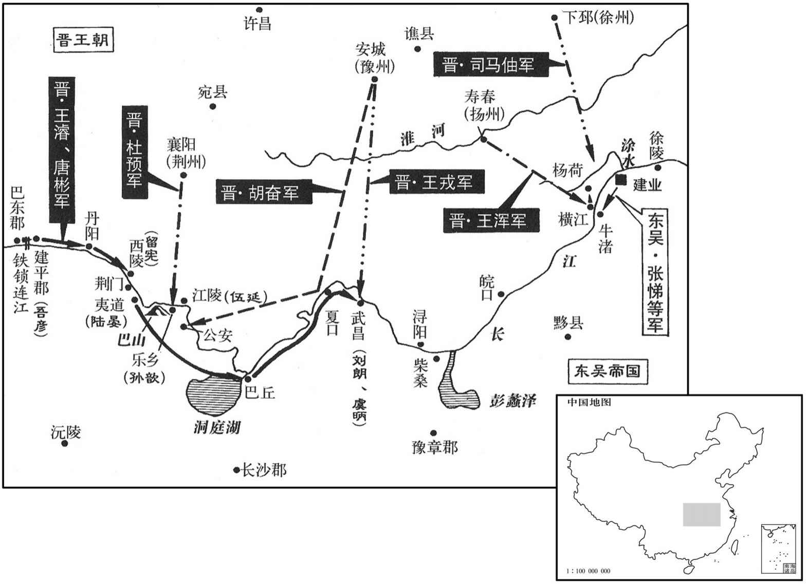
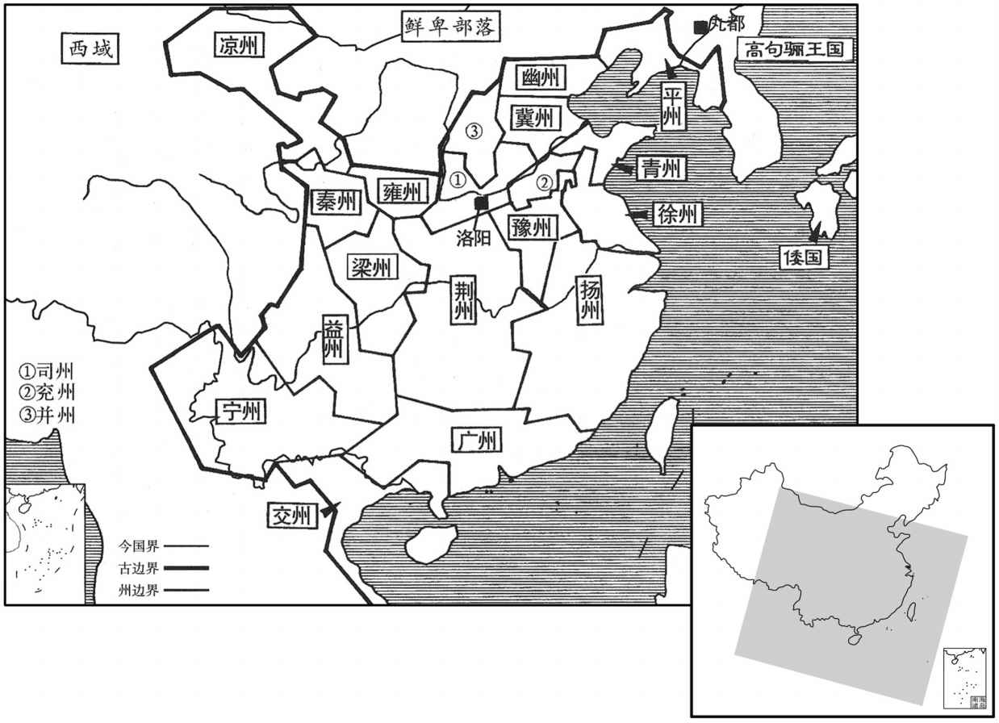
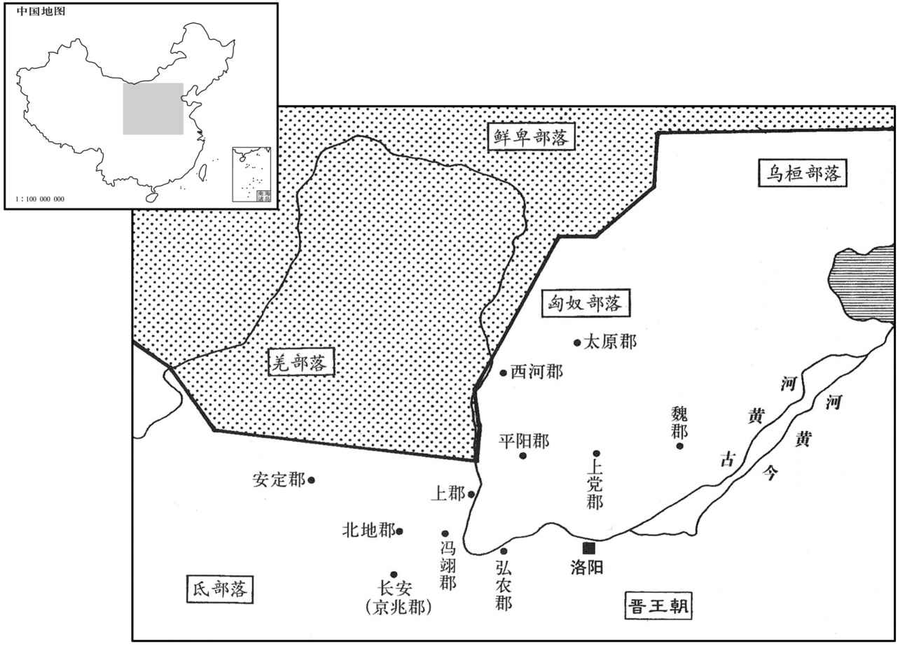

卷次与人物目录 / 卷81
资治通鉴 · 卷第八十一【晋纪三】
公元280年至公元288年 · 原文、白话与胡三省注
本页按胡注本编排保存全卷内容。白话采用本站所据译本，未可靠对应的内容另列说明；事件标题用于定位，并非原书文字。
本卷共92段原文，90段有译文对应，2段缺译或待核对。
卷第八十一【晋纪三】起上章困敦（庚子），尽着雍涒滩（戊申），凡九年。
卷首原文与注释
世祖武皇帝中
公元280年 · 晋世祖武皇帝太康元年
太康元年〔（庚子、二八○）是年四月，改元。〕
上传原文的注释括号有异常，字符原样保留；无法可靠划分的段落默认全文显示。
本年事件索引（现代整理）
- 吴大赦
- 晋军水陆并进，王浚破铁锁连克西陵、荆门，杜预攻克江陵
- 晋军分兵增援王浚、唐彬，杜预安抚荆南
- 王浚、王戎合攻武昌，吴将刘朗、虞昺投降
- 杜预以伐吴如破竹，说服诸将乘胜进军
- 张悌率吴军渡江迎战晋军，沈莹力谏未果
- 张悌、沈莹战败殉国，吴军于版桥溃败
- 杜预劝王浚乘胜直取建业，王浑却坚持等待诏令
- 王浚舟师直抵建业，吴军望旗投降
- 吴人杀岑昏谢罪，孙皓未能阻止
- 晋军压境，陶浚所部临发溃散
- 王浚攻入石头城，孙皓面缚请降，吴亡
- 晋廷庆贺平吴，孙秀南望故国流泪
- 贾充主张罢兵，杜预力争到底，吴亡后贾充请罪
- 孙皓受封归命侯
- 晋大赦改元太康，沿用吴国官员并宽简政令
- 滕修、陶璜等吴臣相继归降，晋廷仍任旧职
- 吴郡县多降，建平太守吾彦坚守至吴亡
- 吴亡后，晋廷改授孙秀、孙楷低职
- 孙皓入洛阳受降，吴吏民获减免赋役
- 孙皓与贾充当廷交锋
- 薛莹直陈孙皓亡国之由，吾彦以天命作答
- 王浑、王浚争功，何恽劝王浚以社稷为重
- 刘颂判王浑、王浚功次，晋武帝贬刘颂
- 晋廷大赏平吴功臣，追念羊祜
- 王浚怨功赏不平，范通劝其谦退
- 杜预整军兴农、疏通漕运，襄阳军民受益
- 王浑复镇寿阳
- 晋武帝召见故吴臣诸葛靓，诸葛靓辞官归乡
- 晋复封司马睦为高阳王
- 晋封司马延祚为乐平王，延祚旋即去世
- 贾充等屡请晋武帝封禅，武帝不许
- 胡威直谏晋武帝执法不应只约束小官
- 晋置司州，统计州郡户口
- 晋武帝裁撤州郡兵，陶璜、山涛谏而不听
- 郭钦预警内迁胡人将成边患，晋武帝不纳
春，正月，吴大赦。
春季，正月，吴国实行大赦。
杜预向江陵，王浑出横江，攻吴镇、戌，所向皆克。二月，戊午，王浚、唐彬击破丹阳监盛纪。〔丹阳城在笫归县东八里，昔周武王封熊绎于荆丹阳之地，即此．．今谓之屈沱楚王城。〕吴人于江碛要害之处，〕迹，七逆翻。水渚有沙石曰碛。〕并以铁镇横截之；又作铁锥，长丈余，暗置江中，以逆拒舟舰。〔长，直亮翻。舰，户黯翻。〕浚作大筏数十，方百余步，缚草为人，被甲持仗，令善水者以筏先行，遇铁锥，锥辄着筏而去。〔筏，音伐。被，皮义翻。着，陟略翻；后着手同。〕又作大炬，长十余丈，〔长，直亮翻。〕大数十围，灌以麻油，在船前，遇锁，然炬烧之，须臾，融液断绝，于是船无所碍。〔以人力设险，而不以人力守之，无益也。〕庚申，浚克西陵，杀吴都督留宪等。壬戌，克荆门、夷道二城，〔荆门，在西陵之东，夷道之西。〕杀夷道监陆晏。杜预遣牙门周旨等帅奇兵八百泛舟夜渡江，袭乐乡，〔帅。读曰率。〕多张旗帜，起火巴山。〔巴山在今江陵府松滋县，有巴复村。帜，昌志翻。〕吴都督孙歆惧，与江陵督伍延书曰：「北来诸军，乃飞渡江也。」旨等伏兵乐乡城外，歆遣军出拒王浚，大败而还。旨丢发伏兵随歆军而人，歆不觉，直至帐下，虏歆而还。乙丑，王浚击杀吴水军都督陆景。〔考异曰：武纪：「壬戌，浚克夷道、乐乡城，杀陆景。」陵抗传：「壬戌，杀晏；癸亥，杀景。」王浚传：「壬戌，克夷道获晏；乙丑，克乐乡，获景。」今从浚传。〕杜预进攻江陵，甲戌，克之，斩伍延。于是沅、湘以南，接于交、广州郡皆望风送印绶。〔水经：沅水出牂柯且兰县东北，过临沅县，又东至长沙下隽县西北入于江。湘水出零陵始安县阳海山，东北过洮阳、泉陵、重安、酃、阴山、澧陵、临湘、罗、下隽等县，又北至巴丘山，入于江。沅，音元。〕预杖节称诏而绥抚之。凡所斩获吴都督、监军十四，牙门、郡守百二十余人。胡奋克江安。〔江安，即公安，吴南郡治焉。杜预既定江南，改曰江安县，为南平郡治所。〕
杜预向江陵进发，王浑从横江出兵，攻打吴的兵镇及边防营垒，攻无不克。二月，戊午（初一），王浚、唐彬打败了丹阳监盛纪。吴人把江边浅滩上的要害区域，用铁锁拦住，还打造了一丈多长的大铁锥，暗中放进江里，用以阻挡战船。王浚造了几十个大木筏，每一个木筏，长、宽都有一百余步。王浚让人扎了许多草人，草人披铠甲，拿兵器，放在大木筏上，让水性好的人与木筏走在前面，遇到铁锥，铁锥就扎到木筏上，被木筏带走了。王浚又造了许多大火把，火把长十几丈，有几十围粗，用麻油浇在火把上，把火把放在船的前面，遇到铁锁就点燃火把，一会儿功夫，铁锁就被火把烧得融化而断开，于是战船就无所阻挡。庚申（初三），王浚攻克了西陵，杀了吴都督留宪等人。壬戌（初五），又攻下了荆门、夷道两座城，杀了夷道监陆晏。杜预派遣牙门周旨等人率领八百名奇兵，在夜里泛舟渡过长江，袭击乐乡。周旨树起许多旗帜，又在巴山点起火。吴都督孙歆非常恐惧，写信给江陵督伍延说：“从北边过来的军队，是飞渡过江的。”周旨等人把军队埋伏在乐乡城外。孙歆派兵出城去打王浚，结果大败而回。周旨等人让伏兵尾随孙歆的军队进了城，孙歆没有觉察，周旨的兵一直到了孙歆的帐幕之下，活捉孙歆而回。乙丑（初八），王浚打败了吴水军都督陆景，把他杀了。杜预进攻江陵，甲戌（十七日），攻克了江陵，杀了伍延。这时候，沅、湘以南地区以及地界相接的交、广等州郡，都闻声把印绶送来。杜预手持符节按照皇帝的诏命安抚了这些州郡。到此时为止，总共俘获、斩杀吴都督、监军十四人，牙门、郡守一百二十多人。胡奋又攻克了江安。
乙亥，诏：「王浚、唐彬既丘定巴丘，与胡奋、王戎共平夏口、武昌，顺流长骛，直造秣陵。〔夏，户雅翻。造，七到翻；下径造同。〕杜预当镇静零、桂，怀辑衡阳。〔零陵、桂阳，汉古郡。衡阳，吴主亮太平二年分长沙西部都尉立。〕大兵既过，荆州南境，固当传檄而定。〔谓重镇既破，其余当望风而靡也。〕预等各分兵以益浚、彬，太尉充移屯项。」〔以荆州已定，不复使贾充南屯襄阳，移屯项为诸军节度。〕
乙亥（十八日），晋武帝下诏书说：“王浚、唐彬已经平定了巴丘，再与胡奋、王戎一同平定夏口、武昌，顺长江长驱直入，直到秣陵。杜预则应当安定零陵、桂阳，安抚衡阳。大军过后，荆州以南的区域，传布檄文自然会平定。杜预等人各自分兵以增援王浚、唐彬，太尉贾充转移到项驻扎。”
王戎遣参军襄阳罗尚、南阳刘乔将兵与王浚合攻武昌，吴江夏太守刘朗、督武昌诸军虞昺皆降。〔夏，户雅翻。降，户江翻。〕昺，翻之子也。
王戎派遣参军、襄阳人罗尚，南阳人刘乔领兵与王浚一起攻打武昌。吴江夏太守刘朗、督武昌诸军虞投降了。虞是虞翻的儿子。
杜预与众军会议，或曰：「百年之寇，未可尽克，方春水生，难于久驻，〔考异曰：杜预传曰：「今向暑，水潦方降，疾疫将起」。按时未暑，今依三十国春秋。〕宜俟来冬，更为大举。」预曰：「昔乐毅藉济西一战以并强齐，〔事见四卷周赧王三十一年。〕今兵威已振，譬如破竹，数节之后，皆迎刃而解，无复着手处也。」〔复，扶又翻；下可复、所复同。着，陟略翻。〕遂指授群帅方略，径造建业。〔帅，所类翻。〕
杜预与众将领议事，有人说：“百年的寇贼，不可能一下子彻底消灭，现在正是春季，有雨水，军队难以长时间驻扎，最好等到冬季来临，再大举发兵。”杜预说：“从前，乐毅凭藉济西一伏而一举吞并了强大的齐国。目前，我军兵威已振，这就好比破竹，破开数节之后，就都迎刃而解了，不会再有吃力的地方了。”于是，指点传授众将领计策谋略，部队一直到了建业。
本段人物：乐毅
吴主闻王浑南下，使丞相张悌督丹阳太守沈莹、护军孙震、副军师诸葛靓帅众二万渡江逆战。〔靓，疾正翻。帅，读曰率；下同。〕至牛渚，沈莹曰：「晋治水军于蜀久矣，〔治，直之翻。〕上流诸军，素无戒备，名将皆死，幼少当任，〔谓陆晏、陆景、留宪、孙歆等。〕恐不能御也。晋之水军必至于此，宜畜众痄以待其来，与之一战，若幸而胜之，江西自清。〔大江北流，自建业言之，历阳、皖城皆为江西。〕今渡江与晋大军战，不幸而败，则大事去矣！」悌曰：「吴之将亡，贤愚所知，非今日也。吾恐蜀兵至此，众心骇惧，不可复整。〔复，扶又翻；下同。〕及今渡江，犹可决战。若其败丧，〔丧，息浪翻。〕同死社稷，无所复恨。若其克捷，北敌奔走，兵势万倍，便当乘胜南上，〔上，时掌翻。〕逆之中道，不忧不破也。若如子计，恐士众散尽，坐待敌到，君臣俱降，无一人死难者，不亦辱乎！」〔如悌之言，吴人至此，为计穷矣。然悌之志节，亦可怜也。难，乃且翻。〕
吴主听说王浑领兵南下，就派丞相张悌，督率丹阳太守沈莹、护军孙震、副军师诸葛靓率领部众三万人渡过长江迎战。走时牛渚时，沈莹说：“晋在蜀地整治水军已经有很长时间了。我上流各部队，素来没有戎备，名将又都死了，只是些年少之人担当重任，恐怕抵挡不住。晋的水军必然要到这些地方，我们应当集中大家的力量等他们到来，与晋打一仗，假如有幸能够取胜，那么长江以北的地区自然就太平了。如果现在渡江与晋大军交战，不幸而打败了，那么大事就完了。”张悌说：“吴将要亡国，这是无论聪明还是愚笨的人都知道的事实，不是今日才有的事。我担心蜀地之兵到了这里，我军恐惧惊慌，就不可能再整肃起来了。趁着现在渡江，尚且还能与晋决一死战。如果败亡，就一同为国而死，再没有什么可遗憾的了；假如能够取胜，那么敌军奔逃，我军声势就将倍增，然后就乘胜向南进军，在半路上迎击敌人，那就不愁不能破敌。要是依了你的计谋，恐怕兵士都四散奔逃；坐等到敌军到来，君臣就一起投降，没有一个人死于国难，这难道不是耻辱吗？”
三月，悌等济江，围浑部将城阳都尉张乔于杨荷；〔水经注：淮水自江夏平春县北，东北流径汝南城阳县故城南。汉高帝十二年，封定侯奚竟为侯国，王莽之新利也；魏置城阳郡。按干宝晋纪，杨荷，桥名。今按水经注之城阳郡，乃元魏所置，张乔盖以浑部将领青州之城阳都尉也。〕乔众纔七千，闭栅请降。诸葛靓欲屠之，悌曰：「强敌在前，不宜先事其小；且杀降不祥。」靓曰：「此属以救兵未至，力少不敌，故且伪降以缓我，非真伏也。〔降，户江翻。伏，屈伏也。或曰：「伏」，当作「服」。〕若拾之而前，必为后患。」悌不从，抚之而进。悌与扬州刺史汝南周浚，结陈相对，〔陈，读曰阵。〕沈莹帅丹阳锐卒、刀楯五千，三冲晋兵，不动。〔楯，食尹翻。〕莹引退，其众乱，将军薛胜、蒋班因其乱而乘之，吴兵以次奔溃，将帅不能止，张乔自后击之，大败吴兵于版桥。〔败，补迈翻。〕诸葛靓帅数百人遁去，使过迎张悌，悌不肯去，靓自往牵之曰：「存亡自有大数，非卿一人所支，柰何故自取死！」悌垂涕曰：「仲思，〔诸葛靓，字仲思。〕今日是我死日也！且我为儿童时，便卿家丞相所识拔，〔丞相，谓诸葛亮也。或曰：谓诸葛瑾。余谓张悌襄阳人，盖亮在荆州，识之于童幼也。〕常恐不得其死，负名贤知顼。今以身徇社稷，复何道邪！」〔道，言也。复，扶又翻。〕靓再三牵之，不动，乃流泪放去，行百余步，顾之，已为晋兵所杀，并斩孙震、沈莹等七千八百级，吴人木震。
三月，张悌等人渡过长江，在杨荷包围了王浑的部将、城阳都尉张乔。张乔手下只有七千人，他关闭了栅栏请求投降。诸葛靓想把他们都杀了，张悌说：“强敌还在前面，不宜先去做无关紧要的事情，况且杀了投降的人不吉利。”诸葛靓说：“这些人是因为救兵还没有到、力量弱小抵挡不住，所以才暂且假装投降以拖延时间，并不是真正的屈服了。如果放了他们，和我们一起往前走。张悌与扬州刺史、汝南人周浚，组成陈列相对。沈莹领兵退却，部众开始乱起来，这时，晋将军薛胜、蒋班乘吴兵混乱之机打过来，吴兵接二连三地奔逃溃散，将帅们也制止不住，张乔又从背后杀过来，结果在版桥，晋大破吴兵。诸葛靓带着几百人逃走，他派人去接张悌，张悌不肯离开，诸葛靓又亲自拉他走，说：存亡自有气数，并不是你一个人所能支撑的，为什么一定要自己求死呢？”张悌流泪说：“诸葛靓，今天是我死的日子。况且我还是幼儿的时候，就被你家丞相诸葛亮所赏识提拔。我常常怕我死得没有意义，辜负了名贤对我的了解与照顾。我今天以身殉国，还有什么可说的呢！”诸葛靓再三拉他走，还是拉不动他，于是就流着眼泪放开手，走了。走了一百多步远，回过头去看张悌，他已经被晋兵杀了。同时被斩首的，还有孙震、沈莹等七千八百人。吴人受到了极大的震动。
初，诏书使王浚下建平，受杜预节度，至建业，受王浑节度。预至江陵，谓诸将曰：「若浚得建平，则顺流长驱，威名已着，不宜令受制于我；若不能克，则无缘得施节度。」浚至西陵，预与之书曰：「足下既摧其西藩，便当径取建业，讨累世之逋寇，释吴人于涂炭，振旅还都，亦旷世一事也！」〔言历世所旷见之事。〕浚大悦，表陈预书。及张悌败死，扬州别驾何恽〔恽，委粉翻。〕谓周浚曰：「张悌举全吴精兵殄灭于忐，吴之朝野莫不震慑。〔朝，直遥翻。慑，之涉翻。〕今王龙骧既破武昌，〔王浚为龙骧将军。骧，思将翻。〕乘胜东下，所血辄克，土崩之势见矣。〔见，贤遍翻。〕谓宜速引兵渡江，直指建业，大军猝至，夺其胆气，可不战禽也！」浚善其谋，使白王浑。恽曰：「浑闇于事机，而欲慎己免咎，必不我从。」浚固使白之，浑果曰：「受诏但令屯江北以抗吴军，不使轻进，贵州虽武，岂能独平江东乎！今者违命，胜不〔【张：「不」作「固」。】〕足多，若其不胜，为罪已重。且诏令龙骧受我节度，但当具君舟懢，一时俱济耳。」恽曰：「龙骧克万里之寇，以既成之功来受节度，未之闻也。且明公为上将，〔将，即亮翻。〕见可而进，岂得一一须诏令乎！〔须，待也。〕今乘此渡江，十全必克，何疑何虑而淹留不进！此鄙州上下所以恨恨也。」〔此所谓恨恨，怅望不汉之意。〕浑不听。
当初，晋武帝下诏书，命令王浚攻下建平，接受杜预的节制调度，到了建业，接受王浑的部署、调度。杜预到江陵，对各位将领说：“如果王浚攻克了建平，就会顺长江长驱直进，他的威名已经显著，就不适合再让他受我的节制。如果他不能取胜，那么我就没有缘份对他施行节制调度了。”王浚到了西陵，杜预写信对他说：“您已经摧毁了敌人的西部屏障，应立即直取建业，讨伐历代的逃寇，从水深火热之中解救吴人，整顿部队，返回都城，这也是前所未有的一件事。”王浚非常高兴，上表陈述杜预的信。张悌战败身死时，扬州别驾何恽对周浚说：“张悌发动的全吴的精兵就在这里灭亡了，这使吴朝野上下没有人不震动恐惧。现在，王浚已经攻下了武昌，正乘胜东下，所向无敌，敌人土崩瓦解之势已经显露出来了。我认为，应当立即领兵渡江，直指建业。大军突然到来，必然使敌人胆战心惊，失去勇气，我们就能不战而擒敌了。”周浚赞赏何恽的计谋，让他去报告王浑。何恽说：“王浑不懂得把握事情的时机，但他想行事谨慎，不使自己有过失，所以他肯定不会听从我的意见。”周浚坚持让他去向王浑禀告，王浑果然说：“我接受皇帝的命令，只让我驻扎在长江以北，以便抗击吴军，并没有让我轻易进兵。你们州的军队虽然勇武，又岂能独立地平定江东之地呢！现在如果违反诏命而出兵，打了胜仗固然值得称赞，如果没有取胜，那么犯下的罪过就已经很严重了。而且皇帝命令王浚接受我的部署调度，你们所应该作的，只是准备好船和桨，一齐渡江。”何恽说：“王浚攻克了万里之敌，他会以成就功勋的身份来接受您的部署调度，这样的事情我可没有听说过。况且明公您为上将，抓住适当的机会就可以行动，怎么可以事事都等待命令呢？现在如果乘机渡江，完全有把握取胜，您还犹豫、顾虑什么而停留不进，这正是使鄙州上上下下的人士抱恨不已的原因。”王恽不听。
王浚自武昌顺流径趣建业；〔趣，七喻翻。〕吴主遣游击将军张象帅舟师万人御之，象众望旗而降。浚兵甲汉江，旌旗烛天，威势甚盛，吴人大惧。
王浚从武昌顺着长江直接向建业进逼。吴主派遣游击将军张象率领舟师一万人抵抗。张象的部下望见王浚的旌旗就投降了。这时候，江中满满的全都是身披铠甲的王浚的士兵，旌旗映照着天空，威猛的气势极其盛大，吴人异常恐惧。
吴主之嬖臣岑昏，以倾险谀佞，致位九列，〔九列，九卿也。〕好兴功役，〔好，呼到翻。〕为众患苦。及晋兵将至，殿中亲近数百人叩头请于吴主曰：「北军日近而兵不举刃，陛下将如之何﹖」吴主曰：「何故﹖」对曰：「正坐岑昏耳。」吴主独言：「若尔，当以奴谢百姓！」〔独言，谓其言止此耳。〕众因曰：「唯！」〔唯，于癸翻，诺也。〕遂并起收昏；吴主骆驿追止，〔骆驿，言相继遣人不绝也。〕已屠之矣。
吴主的宠臣岑昏，由于阴险狡诈、谄媚逢迎而爬上了九卿的地位。他喜好大兴工程劳役，使众人深受困苦与祸患。等晋兵就要到达的时候，宫中亲近的几百名随从官吏向吴主叩头请求说：“北方的敌军一天一天地逼近了，而我们的士兵却不拿起武器抵抗，陛下您打算怎么办呢？”吴主问：“是什么原因？”众人回答说：“正是由于岑昏的缘故。”吴主只说了一句：“要是这样，就拿这个奴才去向老百姓谢罪吧！”众人答应“是！”从地上爬起来就去抓岑昏，等到吴主后悔，不断地派人去追赶制止，岑昏已经被杀了。
陶浚将讨郭马，至武昌，闻晋兵大入，引兵东还。至建业，吴主引见，问水军消息，〔见，贤遍翻。〕对曰：「蜀船皆小，〔陶浚盖以寻常蜀船言之，谍候不明，亦可见矣。〕今得二万兵，乘大船以战，自足破之。」于是合众，授浚节钺。明日，当发，其夜，众悉逃溃。
陶浚要去征讨郭马，到了武昌，听说晋兵已大举进逼，就领兵返回东边。到了建业，吴主派人领他来见面，向他询问水军的情况。陶浚回答说：“蜀地的船都很小，现在给二万名士兵，乘大船作战，我有把握打败敌人。”于是吴召集兵员，授予陶浚符节斧钺。原定第二天了发，但当天夜里，陶浚召集的士兵全都跑光了。
时王浑、王浚及琅邪王軎皆临近境，〔軎，音胄。〕吴司徒何植、建威将军孙晏〔汉光武命耿弇为建威大将军，建威之号自此始。〕悉送印节诣浑降。吴主用光禄勋薛莹、中书令胡冲等计，分遣使者奉书于浑、浚、軎以请降。又遗其群臣，〔遗，于季翻。〕深自咎责，且曰：「今大晋平治四海，是英俊展节之秋，勿以移朝改朔，用损厥志。」〔治，直之翻。朝，直遥翻。〕使者先送玺绶于琅邪王軎。壬寅，王浚舟师过三山，〔三山，在今建康府上元县西南四十五里，又西即江宁夹。陆游曰：三山矶在烈洲下。凡山临江皆曰矶，三山，距金陵财五十余里。〕王浑遣信要浚蹔过论事，〔信，即信使。要，读曰邀。蹔，与暂同。〕浚举帆直指建业，报曰：「风利，不得泊也。」是日，浚戎卒八万，方舟百里，〔诗云：就其深矣，方之舟之。注：方，泭也。舟，船也。尔雅：方木置水曰泭，音夫。〕鼓噪入于石头，吴主哠面缚舆榇，诣军门降。浚解缚焚榇，延请相见。〔榇，初觐翻。〕收其图籍，克州四，郡四十三，户五十二万三千，兵二十三万。〔吴有荆、扬、交、广四州。汉献帝兴平二年，孙策始取江东，魏文帝黄初三年，吴王孙权始称帝，传四主，五十七年而亡。〕
这时，王浑、王浚以及琅邪王司马都已逼近建业附近。吴司徒何植、建威将军孙晏都把印玺、符节送到王浑那里投降了。吴主采用光禄勋薛莹、中书令胡冲等人的计谋，分别派遣使者向王浑、王浚、司马奉上书信请求投降。吴主又给大臣们一封信，在信中深深地谴责了自己的罪过，还说：“当前，大晋平治四海，这正是杰出优秀的人材发挥、施展其气节操守的时期，不要因为改朝换代就因此丧失了志向。”吴主的使者先把印玺送到琅邪王司马那里。壬寅（十五日），王浚的舟师经过三山，王浑派信使邀请王浚暂时过来商议事情，王浚正扬帆直逼建业，回复王浑说：“船行正顺风，不便停下来。”这一天，王浚的八万士兵，乘着相连百里的战船，擂鼓呐喊进入石头城。吴主孙松了绑，焚烧了棺材，请他相见。晋接收了吴的地图、户籍，攻克了吴的四个州，四十三个郡，五十二万三千户，二十三万名士兵。

朝廷闻吴已平，群臣皆贺上寿，帝执爵流涕曰：「此羊太傅之功也。」〔异义韩诗，一升曰爵，爵，尽也，足也。羊祜，赠太傅。〕票骑将军孙秀不贺，〔孙秀来奔，见七十九卷泰始六年。票，匹妙翻。〕南向流涕曰：「昔讨逆弱冠以一校尉创业，〔讨逆，孙策也，起兵之初，袁术表为怀义校尉。冠，古玩翻。〕今后主举江南而弃之，宗庙山陵，于此为墟，悠悠苍天，此何人哉！」〔诗黍离之辞。〕
晋朝廷听到吴已平定的消息，大臣们都去庆贺，为晋武帝祝寿。晋武帝手持酒杯流泪说：“这是太傅羊祜的功劳。”票骑将军孙秀没有和大家一起庆贺，他面朝南方流泪说：“从前，先主孙策刚满二十岁，以一个校尉的身份创下了基业，如今后主把整个江南之地都抛弃了，宗庙陵墓从此将成为废墟，悠悠青天啊，这究竟是谁造成的啊！”
吴之未下也，大臣皆以为未可轻进，独张华坚执以为必克。贾充上表称：「吴地未可悉定，方夏，江、淮下湿，疾疫必起，宜召诸军还，以为后图。虽腰斩张华不足以谢天下。」日帝曰：「此是吾意，华但与吾同耳。」荀勖复奏，宜如充表。帝不从。〔复，扶又翻。〕杜预闻充奏乞罢兵，驰表固争，使至轘辕而吴已降。〔使，疏吏翻。轘，音环。〕充惭惧，诣阙请罪，帝抚而不问。
当初，还没有攻陷吴国的时候，大臣们都认为不可以轻易进军，只有张华非常坚定地坚持进军，认为一定能成功。贾充当时上表说：“吴地不能全都平定，现在正是夏季，长江、淮水下游地区潮湿，必然会发生疾病瘟疫，应当把各部队都召回来，以后再作打算。即使腰斩张华，也不足以向天下人谢罪。”晋武帝说：“这正是我的意思，张华只不过是与我意见相同而已。”荀勖又上奏，大致上与贾充的看法相同。晋武帝没有听他们的话。杜预听说贾充上奏请求停止进兵，急忙上表晋武帝，坚决地争论，派使者拿了给晋武帝的表文，飞驰而去。使者走到辕时吴已经投降了。贾充又惭愧又害怕，到宫里去请罪，晋武帝抚慰了他而没有追究。
夏，四月，甲申，诏赐孙哠爵归命侯。
夏季，四月，甲申（二十八日），晋武帝下诏，赐予孙爵位归命侯。
乙酉，大赦，改元。〔改元太康，自此以前，系咸宁六年事。〕大酺五日。〔酺，薄乎翻。〕遣使者分诣荆、扬抚慰，吴牧、守已下皆不更易；〔守，式又翻。更，工衡翻。〕除其苛政，悉从简易。〔【章：甲十一行本「易」下有「吴人大悦」四字；乙十一行本同；孔本同；张校同；退斋校同。易，以豉翻。〕
乙酉（二十九日），大赦天下，改年号为太康。晋朝聚餐饮酒五天。派遣使者分别到荆州、扬州去抚慰，吴原来的牧、守以下的官吏全都不更换；废除了吴的繁琐的规章制度，一切都遵循简便易行的原则，吴人非常高兴。

滕修讨郭马未克，〔去年吴主哠遣滕修讨郭马。〕闻晋伐吴，帅众赴难，〔帅，读曰率。难，乃旦翻。〕至巴丘，闻吴亡，缟素流涕，还，与广州刺史闾丰、〔闾，姓；丰，名。此与后魏闾大肥不同所自出，闾大肥出于柔然郁久闾氏；左传，楚平王之子启，字子闾，其后以为氏。〕苍梧守王毅各送印绶请降。孙哠遣陶璜之子融持手书谕璜，璜流涕数日，亦送印绶降。帝皆复其本职。〔绶，音受。〕
腾讨伐郭马没有成功，听说晋征讨吴，就率领部下奔来救难。到巴丘，听到吴已亡国的消息，于是身穿白色的丧服流泪，然后就返回了。他与广州刺史闾丰、苍梧太守王毅各自向晋送去印玺绶带请求投降。孙派陶璜的儿子陶融，拿着他亲笔写的信指示陶璜降晋，陶璜哭了好几天，最后也送去了印玺绶带投降了。晋武帝全都恢复了他们原来的官职。
王浚之东下也，吴城戌皆望风款附，独建平太守吾彦婴城不下，闻吴亡，乃降。帝以彦为金城太守。
王浚向东挺进时，吴各城的守备都望风而降，只有建平太守吾彦环绕着城固守，没有攻下来。后来他听到吴亡国的消息就投降了。晋武帝任命吾彦为金城太守。
初，朝廷尊宠孙秀、孙楷，〔楷降见上卷咸宁二年。〕欲以招来吴人。及吴亡，降秀为伏波将军，楷为度辽将军。
当初，朝廷对孙秀、孙楷尊重恩宠，是想利用他们招来吴人。等到吴灭亡了，孙秀就被降职为伏波将军，孙楷降为度辽将军。
琅邪王軎遣使送孙哠及其宗族诣洛阳。五月，丁亥朔，哠至，〔考异曰：吴志哠传：「天纪四年，三月，丙寅，杀岑昏。戊辰，陶浚从武昌还。壬申，王浚到，受哠降。五月丁亥，集于京邑。四月甲申，封归命侯。」晋武纪：「太康元年，二月，壬浚等破武昌，王浑斩张悌。三月，壬申，浚下石头，哠降。乙酉，大赦，改元。四月，遣朱震等慰抚。五月，辛亥，封归命侯。丙寅，引哠升殿。庚午，诏士卒六十归家。庚辰，以浚为辅国将军。」王浚传：「二月，庚申，克西陵，」又云：「壬寅，浚入石头，」而无月。又上书曰：「臣十四日至牛渚，十五日至秣陵。」亦无月。又曰：「去二月武昌失守，哠左右皆得宝散走。」三十国春秋：「四月，甲子，王浑斩张悌。丙寅，杀岑昏，与何桢书。庚午，送降书。壬申，浚入石头。甲申，封归命侯。五月，丁亥，至洛阳。」晋春秋略与之同。按长香，去年闰七月，今年二月戊午朔，三月戊子朔，四月丁巳朔，五月丁亥朔，六月丙辰朔。然则三月无戊辰、丙寅、壬申，五月无庚午、庚辰，与吴志、晋书不合。若依三十国春秋，月日虽合，然二月武昌失守，哠左右离散，不容四月十六日王浚乃至秣陵而哠降。又，哠以四月十六日降，举家西上，至五月一日未能至洛。今事之先后并依吴志、晋书，但削去其日之不与历合者。〕与其太子瑾等泥头面缚，诣东阳门。〔晋志：洛阳城东有建春、东阳、清明三门。泥头者，以泥涂其首也。瑾渠吝翻。〕诏遣谒者解其缚，赐衣服、车乘、田三十，顷岁给钱榖、绵绢甚厚。〔武王伐纣，斩其首，悬于太白之旗。如孙哠之凶暴，斩之以谢吴人可也。乘，绳证翻。〕拜瑾为中郎，诸子为王者皆为郎中。吴之旧望，随才擢叙。孙氏将吏渡江者复十年，百姓复二十年。〔将，即亮翻。复，方目翻。〕
琅邪王司马派使者送孙及他的宗族去洛阳。五月，丁亥朔（初一），孙到了洛阳。他和太子孙瑾等人用泥涂在头上，反绑了双手，来到洛阳的东阳门。晋武帝下诏，派谒者解开他们的绳索，赐以衣服、车子、三十顷田地，每年都供应他们非常充足的钱币、粮食和布匹。晋授予孙瑾中郎的官职，孙皓其他的儿子，凡是原先为王的，都被任命为郎中。吴从前的有名望的人士，都根据他们的才能提拔进用。孙皓的将领、官吏渡过长江的，免除十年的赋税、劳役；老百姓免除二十年的赋税、劳役。
庚寅，帝临轩，大会文武有位及四方使者，国子学生皆预焉。引见归命侯哠及吴降人。哠登殿稽颡。〔见，贤遍翻。稽颡，周之丧拜。颡，额也。稽颡，额触地无容。稽，音启。〕帝谓哠曰：「朕设此座以待卿久矣。」哠曰：「臣于南方，亦设此座以待陛下。」贾充谓哠曰：「闻君在南方凿人目，剥人面皮，此何等刑也﹖」哠曰：「人臣有弒其君及奸回不忠者，则加此刑耳。」〔斥充世受魏恩而奸回附晋，弒高贵乡公也。〕充默然甚愧，而哠频色无怍。〔怍，疾各翻，凓也。〕
庚寅（初四），晋武帝来到堂前的长廊，会见文武官员中有爵位的以及四方来晋的使者，国子学生也都参加会见。晋武帝派人把归命侯孙以及投降的吴人带来相见。孙登上大殿向晋武帝叩头。晋武帝对孙说：“联设了这个座位以等待你已经有很久了。”孙说：“我在南方，也设了这个座位以等待陛下。”贾充对孙说：“听说你在南方，凿人的眼睛，剥人的脸皮，这是哪一等级的刑法？”孙说：“为人臣子的，杀了他的君王以及邪恶不忠的就处以这种刑法。”贾充沉默无语，非常羞愧，而孙却面无愧色。
帝从容问散骑常待薛莹，孙哠所以亡，对曰：「哠昵近小人，〔从，千容翻。近，其靳翻。〕刑罚放滥，大臣诸将，人不自保，此其所以亡也。他日，又问吾彦，对曰：「吴主英俊，宰辅贤明。」帝笑曰：「若是，何故亡﹖」彦曰：「天禄永终，历数有属，故为陛下禽耳。」帝善之。〔有学而无识，此薛莹所以不及吾彦也。属，之欲翻。〕
晋武帝从容地询问散骑常侍薛莹，孙为什么会亡国。薛莹回答说：“孙亲近小人，任意地施行刑罚，大臣和各位将领，人人都不能自保，这就是孙灭亡的原因。”又一天，晋武帝用同样的问题问吾彦，吾彦回答说：“吴君王才智出众，辅佐的大臣贤能聪明。”晋武帝笑着说：“要是这样，为什么会亡国？”吾彦说：“天赐的福禄永久断绝，天道却有归属，所以才被陛下所擒。”晋武帝赞赏他的话。
王浚之入建业也，其明日，王浑乃济江，以浚不待己至，先受孙哠降，意甚愧忿，将攻浚。何攀劝浚送哠与浑，由是事得解。何恽以浑与浚争功，与周浚笺曰：「书贵克让，易大谦光。〔书曰：允恭克让。易曰：谦尊而光。〕前破张悌，吴人失气，龙骧因之，陷其区宇。论其前后，我实缓师，既失机会，不及于事，而今方竞其功；〔竞，争也。〕彼既不吞声，将亏雍穆之弘，兴矜争之鄙，〔雍穆，和也。书曰：汝惟不矜，天下莫与汝争能。〕斯实愚情之所不取也。」浚得笺，即谏止浑。浑不纳，表浚违诏不受节度，诬以罪状。浑子济，尚常山公主，〔公主，帝女也。宗党强盛。有司奏请槛车征浚，帝弗许，但以诏书责让浚以不从浑命，违制昧利。浚上书自理曰：「前被诏书，令臣直诰秣陵，〔被，皮义翻；下同。造，七到翻；下同。〕又令受太尉充节度。臣以十五日至三山，见浑军在北岸，遣书邀臣；臣水军风发，〔【章：甲十一行本「发」下有「乘势」二字；乙十一行本同；孔本同；张校同；退斋校同。】〕径造贼城，无缘回船过浑。〔过，工禾翻。〕臣以日中至秣陵，暮乃被浑所下当受节度之符，〔被，皮义翻。下，遐稼翻。〕欲令臣明十六日悉将所领还围石头，〔十六日者，十五之明日，故曰明十六日。将，即亮翻。〕又索蜀兵及镇南诸军人名定见，〔镇南诸军，杜预所统，盖分以随浚东下者也。定见，谓军人在行定数。索，山客县。〕臣以为哠已来降，无缘空围石头；又，兵人定见，不可仓猝得就，皆非当今之急，不可承用，非敢忽弃明制也。哠众叛亲离，匹夫独坐，雀鼠贪生，苟乞一活耳；而江北诸军不知虚实，不早缚取，自为小误。臣至便得，更见怨恚，〔恚，于避翻。〕并云守贼百日，而令他人得之。臣愚以为事君之道，呴利社稷，死生以之。若其顾嫌疑以避咎责，此是人臣不忠之利，实非明主社稷之福也！」浑又胜周浚书云：「浚军得吴宝物。〔胜其书，使上闻。〕又云：「浚牙门将李高放火烧哠伪宫。」浚复表曰：〔复，扶又翻。〕「臣孙根独立，结恨强宗。夫犯上干主，其罪可救；乖忤贵臣，祸在不测。〔忤，五故翻。〕伪中郎将孔摅说：去二武昌失守，水军行至，〔二月已过，故云去二月。行至，犹言行将至也。摅，抽居翻。〕哠按行石头还，〔行，下孟翻。〕左右人皆跳刀大呼〔杨正衡曰：跳，大么翻。呼，火故翻。〕云：『要当为陛下一死戢决之，』〔为，于伪翻。〕哠意大喜，意必能，然便尽出金宝以赐与之。小人无状，得便驰走哠惧，乃图降首。〔首，式救翻。〕降使适去，〔降，户江翻。使，疏吏翻。〕左右劫夺财物，略取妻妾，放火烧宫。哠逃身窜首，恐不脱死。臣至，遣参军主者救断其火耳。〔断，丁管翻。〕周浚先入哠宫，浑又先登哠舟，臣之入观，皆在其后。哠宫之中，乃无席可坐，若有遗宝，则浚与浑先得之矣。浚等云臣屯聚蜀人，不时送哠，欲有反状。又恐动口又人，言臣皆当诛杀，取其妻子，冀其作乱，得骋私忿。〔骋，丑郢翻。〕谋反大逆，尚以见加，其余谤摂，〔摂，语相恶也，音达合翻。〕故其宜耳。今年平吴，诚为大庆；于臣之身，更受咎累。」〔累，力瑞翻。〕浚至京师，有司奏「浚违诏，大不敬，请付廷尉科罪。」诏不许。〔科，断也。〕又奏浚赦后烧贼船百三十五艘，辄敕付廷尉禁推，；〔此皆王浑亲党使为之。艘，苏刀翻。〕诏勿推。
王浚进入建业的第二天，王浑就渡过长江。王浑因为王浚不等他到，就先接受孙投降，心中又羞愧又怨恨，就想攻打王浚。何攀劝王浚把孙送给王浑，事情才得到缓解。何恽因为王浑与王浚争功，就写信给周浚说：“《尚书》重视能退让，《易经》赞赏谦逊的光荣。前些时候打败了张悌，使吴人丧失了胆量勇气，王浚乘这个机会，攻下了吴的疆土。如果要论谁先谁后，我们确实是慢了，已经失去了机会，没有及时赶上，而目前又在争功，他既然咽不下这口怨气，就会使谐和的风气受到损坏，而使自矜争功的鄙陋之习兴起，这实在是我从心里所不敢同意的。”周浚收到信，立即进谏劝止王浑，王浑不听，上表说王浚违反诏命，不服从调度，还捏造事实诬告王浚有罪。王浑的儿子王济和晋武帝的女儿常山公主结了亲，在朝廷宗族帮派中很有势力。于是，有关部门就上奏晋武帝，请求用囚车把王浚召回来，但是晋武帝没有同意，只是下诏书责备王浚不服从王浑的命令，违抗诏命，去求功利。王浚上书为自己申辩说：“我先接到诏命，让我直接到秣陵，又命令我接受太尉贾充调度。我于十五日到三山，看见王浑的军队在北岸，王浑写信邀请我去他那里，当时我的水军正顺风乘势直到贼城，没有理由再调转船头返回去见王浑。我在中午时到秣陵，黄昏时分才接到受王浑调度的命令，命令我于第二天十六日，率领全部属下，回过头去包围石头城。还索取我率领的蜀地兵士以及随我东下的镇南各军的确切人数。我认为孙已经来投降，没有理由徒劳地包围石头城。另外，士兵的确切人数，不可能在匆促之间就能很快得知，而且都不是眼前急迫的事情，不能顺从施行，并不是我胆敢忽略、弃置圣明的诏令。孙众叛亲离，匹夫独坐，像麻雀、老鼠那样贪生，苟且乞求一条活命而已。但是江北的各部队不了解虚实，不早些来捉拿孙皓，自己造成了失误。我一到便得手，就更遭到怨恨与不满，还说什么守贼守了一百天，却让别人得到了。我认为，侍奉君王的原则是：假如有利于国家，无论生与死都要追求。如果顾虑别人猜忌怀疑因而逃避过错责任，这是作臣子的以不忠诚得到的私利，实在不是圣明的君主与国家的福气。”王浑又递上周浚的书信，信上说：“王浚军队得到了吴的珍贵物品。”还说：“王浚的牙门将李高，放火烧了孙的宫殿。”王浚又上表说：“我孤根独立，与强大的宗派结下了仇怨。如果是冒犯了君王的罪过还可能得救，但要是得罪了权贵之臣，灾祸就难以预料了。吴中郎将孔摅说：二月武昌失守，晋水军马上就要到了。孙巡行石头城回来，他手下的人都挥舞着刀大呼，说：‘正要为了陛下去决一死战，’孙非常高兴，觉得必然能如此，就把他的金器宝物全都拿出来赐给这些人。然而小人无礼，这些人得了值钱的东西就飞快地逃走了。孙非常恐惧，于是打算投降伏罪。孙派出的使者刚离开，他手下的人就开始抢夺财物，掠夺孙的妻妾，放火烧了宫殿。孙抱头鼠窜，唯恐不能活命。我到那里时，派参军主者才把火扑灭。周浚先进入孙的宫殿，王浑又先登上孙的船，我进去和我所见到的，全都在他们之后。孙的宫里，连可以坐的席子都没有，假如有遗留下来的珍贵之物，也是周浚
浑、浚争功不已，帝命守廷尉广陵刘颂校其事，以浑为上功，浚为中功。帝以颂折法失理，〔折法，犹折狱之折。折，断也。〕左迁京兆太守。〔魏文帝受禅，改京兆尹为太守，夷于列郡。〕
王浑与王浚，为了功劳而争执不休，晋武帝命令守廷尉、广陵人刘颂来审定、处理这件事。刘颂认为王浑立了上功，王浚是中功。晋武帝认为刘颂断法不合理，就把他降职为京兆太守。
庚辰，增贾充邑八千户；以王浚为辅国大将军，封襄阳县侯；杜预为当阳县侯；王戎为安丰县侯；封琅邪王軎二子为亭侯；增京陵侯不浑邑八千户，进爵为公；尚书内侯张华进封广武县侯，增邑万户；〔王浑除京陵旧食邑之外，增八千户，张华则增广武侯吧为万户。〕荀勖以专典诏命功，封一子为亭侯；〔勖为中书监，专典诏命。〕其余诸将及公卿以下，赏赐各有差。帝以平吴功，策告羊祜庙，乃封其夫人夏侯氏为万岁乡君，食邑五千户。〔夏，户雅翻。〕
庚辰（疑误），增加贾充封邑八千户。任命王浚为辅国大将军，封为襄阳县侯。杜预被封为当阳县侯。王戎被封为安丰县侯。琅邪王司马的两个儿子被封为亭侯。增加京陵侯王浑食邑八千户，提升爵位为公。尚书关内侯张华，被进爵封为广武县侯，增加食邑至万户。荀勖因为专门掌管诏命的功劳，一个儿子被封为亭侯。其余各位将领以及公卿大臣以下的官吏。受到的赏赐各不相同。晋武帝以平吴的功绩，到羊祜庙里用简书靠慰他，封羊祜的夫人夏侯氏为万岁乡君，食邑五千户。
王浚自以功大，而为浑父子及党与所挫抑，每进见，〔见，贤遍翻。〕陈其攻伐之劳及见枉之状，或不胜忿愤，径出不辞；帝每容恕之。〔晋武之量，弘于随文。胜，音升。〕益州护军范通谓浚曰：「卿功则美矣，然恨所以居美者未尽善也。卿旋旆之日，角巾私第，〔晋志曰：巾以葛为之，形如幍而横着之，古者尊卑共服之。余谓幅巾以横幅为之，角巾则巾之有角者。郭林宗遇雨，巾一角垫，则角巾也。〕口不言平吴之事；若有问者，则曰：『圣人〔【张：「人」作「主」。】〕之德，群帅之力，老夫何力之有！』此蔺生所以屈廉颇也，〔事见四卷周赧王三十六年。帅，所类翻。〕王浑能无愧乎！」浚曰：「吾始惩邓艾之事，〔邓艾之死，以锺会所蔽，艾情不得上通也。〕惧祸及身，不得无言；其终不能遣诸胸中，是吾褊也。」〔自知数陈其功及为浑所枉为褊。牖，补辨翻。〕时人咸以浚功重报轻，为之愤邑；〔为，于伪翻。〕博士秦秀等并上表讼浚之屈，帝乃迁浚顉军大将军。〔考异曰：浚传云：「领步兵校尉，旧校唯五，置此营自浚始也。」按职官志：「屯骑、步兵、长水、越骑、射声校尉，是为五校，并汉官也。」然则步兵之名，非自浚始。武帝纪：「是年六月，丁丑，初置翊军校尉官，」疑浚所领者翊军也。〕王浑尝诣浚，浚严设备卫，然后见之。〔周勃就国，绛及河东吏至，常令家人被甲持兵以见之，亦犹王浚之严设备卫以见王浑也。此二人者，力足以定天下之难，智足以取一国，而其所以包周身之防乃尔，可笑也哉！〕
王浚自以为功劳大，却遭到了王浑父子及其党羽的打击和冤枉，所以每次进见晋武帝，总要陈述他讨伐攻战的辛劳以及被冤屈的情况，有时候忍不住愤恨与不满，竟不辞而别，晋武帝总是宽容、原谅他。益州护军通对王浚说：“你的功劳确实值得赞美，但遗憾的是，你以别人的赞美自居，这就不完全值得赞赏了。你应当凯旋之后就隐居在自己家里，嘴里不谈平吴的事情，如果有人问到平吴之事，你就说：‘这是圣明的君主的德行，是各位将帅的力量，我这个老头子又有什么功劳！’蔺相如就是用这个办法把廉颇降住了，王浑他能不惭愧吗？”王浚说：“我开始那样作是吸取了邓艾的教训，害怕把灾祸惹上身，我不能不说，但是我最终也不能放开这件事，还是因为我心地狭窄。”当时，人们都觉得王浚的功劳大，但是对他的报偿轻了，都对此愤恨不平。博士秦秀等人一起上表，替王浚叫屈，晋武帝于是授予王浚镇军大将军官职。王浑曾经到王浚那里去，王浚设置了森严的戒备、护卫，然后会见王浑。
杜预还襄阳，以为天下虽安，忘战必危，乃勤于讲武，申严戊守。又引滍、流月水以浸田万余顷，〔水经注：滍水出南阳鲁山县西尧山，东径犨县，又东南径昆阳县，又东北径颍川定陵县，东入于汝。淯水出弘农卢氏县攻离山，东南径南阳西鄂县、宛县而屈，南过淯阳县，又南过新野县，西过邓县，南入于沔。滍，音丈几翻。淯，音育。〕开扬口通零、桂之漕，〔水经注：扬水上承江陵县赤湖，东北流径郢城南，又东北与三湖水会。三湖者，合为一水，东通荒谷，东岸有冶父城。春秋传曰：「莫敖缢于荒谷，群帅囚于冶父，」谓此处也。春夏水盛，则南通大江，否则南迄江堤。扬水又东入华容县，又东；北与柞溪水合；又北径竟陵县，又北注于沔，谓之扬口。预传曰：旧水道惟沔、汉达江陵千数百里，北无通路，预乃开扬口，起夏水，达巴陵千余里，内泻长江之险，外通零、桂之漕。杜佑曰：夏水、扬口，在今江陵郡江陵县界。〕公私赖之。预身不跨马，射不穿札，〔札，甲札也。左传：潘戸之党与养由基蹲甲而射之，彻七札焉。〕而用兵制胜，诸将莫及。预在镇，收饷遗洛中贵要，〔数，所角翻。遗，于季翻。〕或问其故，预曰：「吾但恐为害，不求益也。」
杜预回到襄阳以后，觉得天下虽然安定了，但是如果忘记了战事就必然会导致危难，于是他勤于讲习武事，命令部下要严于防守。他还引来水和水浇灌田地一万多顷，开凿扬口，与零、桂之水相通，以利水上运输，公与私都赖此而得到方便。杜预身不跨战马，射箭不能透甲，但是他以善于用兵战胜对方，各位将领都比不上他。杜预人在镇守，却多次向京都的权贵要人馈赠，有人问他为什么要这样作，杜预回答说：“我只怕他们会加害于我，并不指望他们能给我什么好处。”
王浑迁征东大将军，复镇寿阳。
王浑升迁为征东大将军，又去镇守寿阳。
诸葛靓逃窜不出。〔靓入吴见七十七卷魏高贵乡公甘露二年。〕帝与靓有旧，靓姊为琅邪王妃，〔琅邪王軎。〕帝知靓在姊间，因就见焉。靓逃于厕，帝又逼见之，谓曰：「不谓今日复得相见！」靓流涕曰：「臣不能漆身皮面，〔自谓不能如豫让、聂政也。〕复圣颜，诚为凓恨！」诏以为侍中；固辞不拜，归于乡里，终身不向朝廷而坐。〔诸葛氏之子皆有志节。〕
诸葛靓逃走以后，就隐藏起来不露面。晋武帝与诸葛靓有旧交，诸葛靓的姐姐是琅邪王司马的妻子。晋武帝知道诸葛靓躲在他姐姐那里，因此就去那里见他。诸葛靓逃进厕所躲着不见，晋武帝又强行见他，对他说：“没想到今天又见面了！”诸葛靓流泪说：“我没能作到往身上涂漆，把脸上的皮刮下来，又见到了圣上您的面容，我实在是又愧又恨。”晋武帝下诏书任命诸葛靓为侍中，诸葛靓坚决推辞不接受。后来诸葛靓回到了家乡，一生也没有面朝着晋朝廷的方向就座。
六月，复封丹水侯睦为高阳王。〔睦贬爵见上卷咸宁三年。〕
六月，重新封丹水侯司马睦为交阳王。
秋，八月，己未，封皇弟延祚为乐平王，寻薨。
秋季，八月，己未（初五），封武帝弟司马延祚为乐平王，不久他就去世了。
九月，庚寅，贾充等以天下一统，屡请封禅；帝不许。
九月，庚寅（初六），贾充等人认为天下已经统一了，多次请到泰山上举行祭天地的典礼，晋武帝不同意。
冬，十月，前将军青州刺史淮南胡威卒。〔帝以左、右、前、后四将军为四军。〕威为尚书，尝谏时政之宽。帝曰：「尚书郎以下，吾无所假借。」威曰：「臣之所陈，岂在丞、郎、令史，正谓如臣等辈，始可以肃化明法耳！」〔威，质之子也。〕
冬季，十月，前将军、青州刺史、淮南人胡威去世。胡威任尚书，曾经进谏，认为当时的政治措施宽松。晋武帝说：“尚书郎以下的官吏，我没有对他们宽容。”胡威说：“我所陈述的，难道是丞、郎、令史这一类官吏吗？我正是说像我同辈的官员，才可以严肃教化，彰明法度。”
是岁，以司隶所统郡置司州，凡州十九，〔考异曰：宋书州郡志云：「太康元年，天下一统，凡十六州，后又分雍、梁为秦，分荆、扬为江，分益为宁，分幽为平，而为二十矣。」按杜佑通典：「平吴，分十九州岛：司、兖、豫、冀、并、青、徐、荆、扬、凉、雍、秦、益、梁、宁、幽、平、交、广。」今从之。杜佑曰：司州治洛阳。兖治廪丘，今濮阳郡雷泽县。豫治项，今淮阳郡项城县。冀治房子，今赵郡县。并治晋阳。青治临菑。徐治彭城。荆初治襄阳，后治江陵。扬治寿春，后治建业。凉治武威。分三辅为雍，治京兆。分陇山之西为秦，治上邽。益治成都。分巴、汉之地为梁，治南郑。分云南为宁，治云南。幽治涿。分辽东为平，治昌黎。交治龙编。分合浦之北为广，治番禺。〕郡国一百七十三，户二百四十五万九千八百四十。
这一年，以司隶所统领的郡设置司州。一共有十九个州，一百七十三个郡国，二百四十五万九千八百四十户。
诏曰：昔自汉末，四海分崩，刺史内亲民事，外领兵马。今天下为一，当韬戢千戈，刺史分职，皆如汉氏故事；〔察举郡县长吏而已。〕悉去州郡兵，大郡置武吏百人，小郡五十人。」交州牧陶璜上言：「交、广东西数千里，〔交州统合浦、交趾、新昌、武平、九真、九德、日南。广州统南海、临贺、始安、始兴、苍梧、郁林、桂林、高兴、宁浦郡。去，羌吕翻；下宜去同。〕不宾属者六万余户，至于服从官役，纔五千余家。二州唇齿，唯兵是镇。又，宁州诸夷，接据上流，水陆并通，〔仆水、叶榆水、劳水、桥水皆出宁州界，入交、广界。又霍弋自宁州遗杨稷等经略交、广，是水陆并通也。〕州兵未宜约损，以示单虚。」仆射山涛亦言「不宜去州郡武备」；〔考异曰：涛传云「与卢钦论之」。按钦，咸宁四年三月已卒。〕帝不听。及永宁以后，盗贼群起，州郡无备，不能禽制，天下遂大乱，如涛所言。然其后刷史复兼兵民之政，州镇俞重矣。
晋武帝下诏书说：“从前自汉末开始，四海之内分崩离析，刺史对内亲自处理民事，对外统领兵马。如今天下一统，应当收藏起兵器，把刺史的职权区分开，全都依照汉时的制度行事。把州郡的兵都去掉，大郡设置武官一百人，小郡设置五十人。”交州牧陶璜上书说：“交州、广州，从东到西有几千里，不归顺的有六万多户，至于服从官府劳役的，只有五千多家。两个州唇齿相依，只有靠军队才能镇守住。另外，宁州各蛮夷，与上流地区接壤，他们据守在那里，水路陆路都通。所以，不应该减损州兵，以显出官府的力量单薄虚弱。”仆射山涛也说：“不应当去掉州郡的军事守备。”晋武帝却不听。到了永宁以后，盗贼群起，州郡由于没有军队和武器，没有办法捉拿制止，于是天下大乱，正像山涛所说的那样。然而从这以后，刺史又兼管兵民的政务，地方的军事力量更加强大了。
汉、魏以来，羌、胡、鲜卑降者，〔降，户江翻。〕多处之塞内诸郡。其后数因忿恨，杀害长吏，渐为民患。侍御史西河郭钦上疏曰：「戎狄强犷，〔处，昌吕翻。犷，古猛翻，粗恶貌。〕历古为患。魏初民少，〔少，诗沼翻。〕西北诸郡，皆为戎居，内及京兆、魏郡、弘农，往往有之。今虽服从，若百年之后有风尘之警，胡骑自平阳、上党不三日而至孟津，北地、西河、太原、冯翊、安定、上郡尽为狄庭矣。宜及平吴之威，谋臣猛将之略，渐徙内郡杂胡于边地，峻四夷出入之防，明先王荒服之制，〔禹贡：五服相距方五千里，荒服内距甸服二千里。〕此万世之长策也。」帝不听。〔为后诸胡乱华张本。〕
汉、魏以来，羌、胡、鲜卑等投降的部落，大乡居住在关塞之内的各个郡里。以后多次因为不满和怨恨，杀害了郡县的长官，逐渐成为百姓的祸患。侍御史、西河人郭钦上疏说：“戎狄强暴蛮横，自古以来就是祸患。魏初期，百姓人数少，西北各郡，都被戎人居住，内地一直到京兆、魏郡、弘农，也往往有戎人居住。现在虽然服从我们，但如果百后之后，发生了战乱的危机，胡人的骑兵从平阳、上党地区，用不了三天就能到孟津，那么北地、西河、太原、冯翊、安定、上郡这些地区，就都成为狄人的占地了。应当趁平吴的威势，谋臣猛将的谋略，逐渐迁徒内地各郡居住的胡人到边境地区去，加强夷狄经常出入地区的防卫，以彰明先王所制定的使戎狄远离都城的制度，这是千年万代的长远的策略。”晋武帝不听。

公元281年 · 晋世祖武皇帝太康二年
二年〔（辛丑、二八一）〕
春，三月，诏选孙哠宫人五千人入宫。帝既平吴，颇事游宴，怠于政事，掖庭殆将万人。常乘车，〔晋志曰：羊车，一名辇车，上如轺，伏兔箱，漆画轮轭。〕恣其所之，至便退寝；宫人竞以竹叶插户，盐汁洒地，以引帝车。〔羊嗜竹叶而喜咸，故以二者引帝车。〕而后父杨骏及弟珧、济始用事，〔珧，余招翻。〕交通请谒，势倾内外，时人谓之三杨，旧臣多被疏退。山涛数有规讽，〔数，所角翻；下同。〕帝虽知而不能改。
春季，三月，晋武帝下诏书，挑选孙的宫女五千人进宫。晋武帝已经平定了吴，他开始把很多时间花费在游乐、宴饮上，对政事的处理懈怠了，宫中妃嫔的人数几乎接近一万人。晋武帝经常乘坐着羊拉的车子，听凭羊走到哪里，就在哪里宴饮、入寝，宫女们都争先恐后地用竹叶插在门上，用盐水洒地，诱使羊把车子拉到自己门前。皇后的父亲杨骏及杨骏的弟弟杨珧、杨济开始当权，他们互相勾结，互相利用，权势倾动朝廷内外，当时的人称他们为三杨，朝廷里的旧臣，许多都被疏远、贬退了。山涛多次对晋武帝规劝、谏阻，晋武帝心里也明白，但就是改不了。
初，鲜卑莫护跋始自塞外入居辽西棘城之北，〔棘城在昌黎县界，是后慕容氏置棘城县。拓跋魏太武真君八年，并棘入昌黎郡龙城县。载记曰：莫护跋从宣帝伐公孙氏有功，拜率义不，始建国于棘城之北。〕号曰慕容部。〔魏书曰：汉桓帝时，鲜卑檀石槐分其地为东、中、西三部，中部大人曰柯最、阙居、慕容等，为大帅，是则慕容部之始也载记曰：莫护跋国于棘城之北，时燕、代多冠步摇冠，莫护跋见而好之，乃敛发袭冠，诸部困呼之为「步摇」，其后音讹，遂为慕容。或云：慕二仪之德，继三烷之容，遂以慕容为氏。余谓步摇之说诞；或云之说，慕容氏既得国，其臣子从而为之辞。〕莫护跋生木延，木延生涉归，迁于辽东之北，世附中国，数从征讨有功，拜大单于。〔单，音蝉。〕冬十月，涉归始寇昌黎。〔昌黎，汉之交黎县，属辽西郡，东汉属辽东属国都尉。魏正始五年，鲜卑内附，复置辽东属国，立昌黎县以居之，后立昌黎郡。慕容氏始此。考异曰：帝纪云「慕容廆」按范亨燕书武宣纪：「廆，泰始五年生，年十五，父单于涉归卒，」太康四年也。此年入寇，当是涉归。〕
当初，鲜卑人莫护跋开始从塞外入关，居住在辽西的棘城的北边，其称号是慕容部。莫护跋生下了木延，木延生下涉归，迁移到辽东以北地区，世代归附中国，曾经多次随从官府的军队去征讨，立了功，被封为大单于。冬季十月，涉归开始入侵昌黎。
十一月，壬寅，高平武公陈骞薨。〔考异曰：帝纪云「大司马」。按骞以咸宁三年辞位，以高平公还第。〕
十一月，壬寅（二十五日），高平武公陈骞去世。
是岁，扬州刺史周浚移镇秣陵。〔魏扬州治寿春，晋平吴，乃移治秣陵。扬者，江南之气躁劲，厥性轻扬。亦曰：州界多水，水波扬也。统丹杨、宣城、淮南、庐陵、庐江、毗陵、吴、吴兴、会稽、东阳、新安、临海、建安、晋安、豫章、临川、鄱阳、南康，凡十八郡。〕吴民之未服者，屡为寇乱，浚皆讨平之；宾礼故老，搜求俊乂，威惠并行，吴人悦服。
这一年，扬州刺史周浚把治所迁移到秣陵。吴百姓中还没有归顺的，经常搔扰抢掠，都被周浚讨伐平定了。周浚以宾客之礼对待元老旧臣，访求有才德的人，威势与恩惠并用，吴人心悦诚服。
公元282年 · 晋世祖武皇帝太康三年
三年〔（壬寅、二八二）〕
上传原文的注释括号有异常，字符原样保留；无法可靠划分的段落默认全文显示。
本年事件索引（现代整理）
春，正月，丁丑朔，帝亲祀南郊。礼毕，喟然问司隶校尉刘毅曰：「朕可方汉之何帝﹖」对曰：「桓、灵。」帝曰：「何至于此﹖」对曰：「桓、灵卖官钱入官库，陛下卖官钱入私门，以此言之，殆不如也。」帝大笑曰：「桓、灵之世，不闻此言，今朕有直臣，固为胜之。」〔考异曰：地理志：「太康元年，省司隶，置司州」。毅传：「毅为司隶校尉，帝尝南郊，礼毕，问毅，」而无年月。晋春秋问毅在此月，而不言毅官。按毅传，「六年，自司隶迁左仆射，」或者此年尚未改为司州也，今从毅传。〕
春季，正月，丁丑朔（初一），晋武帝亲自到南郊祭祀。典礼结束后，晋武帝感叹地询问司隶校尉刘毅说：“我可以和汉代的哪一个帝王相比？”刘毅回答说：“可与桓帝、灵帝相比。”晋武帝说：“何至于到这个地步？”刘毅说：“桓帝、灵帝出卖官职的钱都进了官府的仓库，陛下出卖官职的钱都进了个人的家门，凭这一点来说，大概还不如桓帝、灵帝了。”晋武帝大笑道：“桓帝、灵帝的时代，听不到这样的话，现在朕有正直的臣下，已经胜过桓帝、灵帝了。”
毅为司隶，纠绳豪贵，无所顾忌。〔绳，弹正也。纠，浚也。〕皇太子鼓吹入东掖门，〔臣子至宫掖门，屏仪导，下车而入。太子鼓吹入掖门为不敬。吹，昌瑞翻。毅劾秦之。〔劾，户概翻，又户得翻。〕中护军、散骑常侍羊琇，与帝有旧恩，〔事见七十八卷魏元帝咸熙元年。琇，音秀。〕典禁兵，豫机密十余年，恃宠骄侈，数犯法。〔数，所角翻。〕毅劾奏琇罪当死；帝遣齐王条私请琇于毅，毅许之。都官从事广平程卫径驰竹护军营，收琇属吏，〔属，之欲翻。〕考问阴私，先奏琇所犯狼籍，然后言于毅。帝不得已，免琇官。未几，复使以白衣领职。〔几，居岂翻。〕
刘毅任司隶，举发惩处豪门权贵，无所顾忌。皇太子吹打着乐器进入宫中的东掖门，违反了宫中的规定，刘毅就上奏皇帝检举他。中护军、散骑常侍羊，过去曾有恩于晋武帝。他掌管皇帝的亲兵，十几年来一直参与朝廷机密要事，倚仗着皇帝的恩宠，骄横奢侈，多次犯法。刘毅上奏皇帝，检举羊的罪行，认为他所犯下的罪应当处以死刑，晋武帝派齐王司马攸私下去找刘毅，为羊求情，刘毅同意了。这时，都官从事、广平人程卫，直接进入护军营，拘捕了羊的手下官吏，拷打审问他暗中所作的隐秘之事。他先把羊所犯下的不检点的事上奏皇帝，然后告诉了刘毅。晋武帝不得已，免了羊的官，但是没过多久，又让他以平民的身份兼任职务。
琇，景献皇后之从父弟也；后将军王恺，文明皇后之弟也；〔景帝羊后諆景献。文帝王后谥文明。从，才用翻。〕散骑常侍石〔【章：甲十一行本后」上有「侍中」二字；乙十一行本；孔本同；张校同。】〕崇，苞之子也。三年皆富于财，竞以奢侈相高：恺以絶澳釜，〔絶，盈之翻，饧也；说文曰：米挧煎也；一曰：濡弱者为絶。澳，于到翻；今台、明谓以水沃釜为澳镬；又乙六翻。〕崇以蜡代薪；〔蜡，蜜滓也。〕恺作紫丝步障四十里，崇作锦步障五十里；〔步障，夹道设之以障蔽，若今之罣罳。〕崇涂屋以椒，〔椒性温而芬馥。〕恺用赤石脂。〔本草图经曰：赤石济南射阳及太山之阴。苏恭云：济南、太山不闻出者；惟虢州卢氏县、泽州陵川县慈州昌乡县并有，及宜州诸山亦出，今出潞州，以色理鲜腻者为胜。〕帝每助恺，尝以珊瑚树赐之，〔本草：珊瑚，生海底，柯枝明润如红玉。〕高二尺许。恺似示石崇，崇便以铁如意碎之；〔铁如意，手挝也，以铁为之，若今之朋朵子。〕恺怒，以为疾己之宝。崇曰：「不足多恨，今还卿！」乃命左右悉取其家珊瑚树，高三、四尺者六、七株，如恺比者甚众，恺怳然自失。〔怳，虎晃翻。自失，不得意貌。〕
羊是景献皇后的叔伯堂弟；后将军王恺，是文明皇后的弟弟；散骑常侍、侍中石崇，是石苞的儿子。这三个人都有丰富的财物，他们互相攀比，谁最奢侈谁就最受尊重。王恺用糖膏刷锅，石崇就用密蜡当柴烧。王恺用紫色的蚕丝作路两旁的屏幕，长达四十里，石崇就用锦作屏幕，长五十里。石崇用花椒粉和泥涂房屋，王恺就用赤石腊涂墙。晋武帝时常帮助王恺，曾经赐给珊瑚树，有二尺多高。王恺把珊瑚树拿给石崇看，石崇就用铁如意把王恺的珊瑚树击碎了。王恺动了怒，认为石崇是嫉妒他的珍贵之物。石崇说：“你不值得生那么大的气；我现在就还给你。”于是命令手下人把家中的珊瑚树全都拿了出来，其中高三、四尺的有六、七棵，和王恺的珊瑚树相同的有很多，王恺惘然失意，不知所措。
车骑司马傅咸上书曰：〔晋志曰：骠骑以下及诸大将军不开府、非持节都督者，置长史、司马各一人。〔先王之治天下，〔治，直之翻。〕食肉衣帛，皆有其制，〔古者黎民五十而后食肉，六十而后衣帛。衣，于既翻。〕窃谓奢侈之费，甚于天灾。古者人稠地狭，而有储蓄，由于节也。今者土广人稀，而患不足，由于奢也。欲人崇俭，当诘其奢，奢不见诘，转相高尚，无有穷极矣！」〔诘，去吉翻。〕
车骑司马傅咸上书说：“先王治理天下，对吃肉、穿丝织的衣服，都有规定。我私下认为，由于奢侈而造的浪费，比天灾还要严重。古时候人多地少，然而有积蓄，这就是因为节俭的缘故。现在土地辽阔，人丁稀少，但是却为物品不充足而忧虑，这是由于奢侈的缘故。要想让人们都崇尚节俭，那就应当整治奢侈的习气，奢侈而不被整治，反而互相攀比，那就没有止境了！”
尚书张华，以文学才识，名重一时，论者皆谓华宜为三公；中书监荀勖、侍中冯紞以伐吴之谋深疾之。〔紞，都感翻。〕会帝问华：「谁可托后事者﹖」华对以「明德至亲，莫如齐王。」由是忤旨，〔忤，五故翻。〕勖因而谮之。甲午。以华都督幽州诸军事。华至镇，抚循夷夏，〔夏，户雅翻。〕誉望益振，帝复欲征之。冯紞侍帝，从容语及锺会，〔从，千容翻。〕紞曰：「会之反，颇由太祖。」〔会反见七十八卷魏元帝咸熙元年。文帝，庙号太祖。〕帝变色曰：「卿是何言邪！」紞免冠谢曰：「臣闻善御者必知六辔缓急之宜，故孔子以仲由兼人而退之，冉求退弱而进之。〔事见论语。〕汉高祖尊宠五王而夷咸，〔事并见汉高帝纪。五王，两韩信、彭越、英布、卢绾。〕光武抑损诸将而克终。〔光武灴使功臣预政事，故皆保其福禄，无诛谴者。〕非上有仁暴之殊，下有愚智之异也，盖抑扬与夺，使之然耳。锺会才智有限，而太祖夸状无极，居以重势，委以大兵，使会自谓算无遗策，功在不赏，遂构凶逆耳。向令太祖录其小能，节以大礼，抑之以威权，纳之以轨则，则乱心无由生矣。」帝曰：「然。」紞稽首曰：「陛下既然臣之言，宜思坚冰之渐，〔稽，音启。易坤之初六曰：履霜坚冰至。象曰：履霜坚冰，阴始凝也。驯玫其道，至坚冰也。〕勿使如会之徒复致倾覆。」〔复，扶又翻。〕帝曰：「当今岂复有如会者邪﹖」紞因屏左右而言曰：〔屏，必郢翻。〕「陛下谋画之臣，着大功于天下，据方镇，总戎马者，皆在陛下圣虑矣。」帝默然，由是止不征华。
尚书张华由于他的文章、博学，才能与见识，在当时有名气，被人尊重。人们议论说，张华应当作三公。中书监荀勖、侍中冯，由于伐吴的谋略，深深地嫉恨张华。这时晋武帝问张华：“谁是我可以向他托付后事的人呢？”张华回答说：“聪明有德行，又是您的至亲之人，没有人比齐王更合适了。”这一句话就触犯晋武帝的心思，荀勖就乘机诽谤张华。甲午（十八日），任命张华统领幽州诸军事。张华到了镇守，安抚汉族及夷的平民百姓，声望更高了。这时，晋武帝又想把他召回来。冯正在晋武帝身旁侍候，他不慌不忙地和晋武帝谈到了钟会。冯说：“钟会之所以谋反，很大部分原因在于太祖。”晋武帝变了脸色，说：“你这是什么话！”冯脱帽谢罪说：“我听说善于驾奴车马的人必然懂得六根缰绳的掌握要缓急适度，所以孔子因为仲由胜过别人而贬退他，因为冉求退缩、软弱而推举他。汉高祖尊重、宠爱的五位王最终都被除掉；光武帝抑制、贬损各位将领，他们因而能善终。这并不是因为圣贤、帝王有仁爱、残暴的区别，臣下有愚昧、聪明的不同，这是由于褒贬和与夺才使得他们这样。钟会的才能、谋略有限，但是太祖对他的赞赏没有止境，让他担任重要的职权，把大军托付给他，使钟会自认为谋划周密，没有遗漏，有功劳却得不到赏赐，于是就构成了谋反。假使太祖任用他的小才能，用大的礼法主谥狡他，用威势和权力抑制他，使他纳入法则制度，那么他作乱之心就没有产生的机会了。”晋武帝说：“是这样。”冯跪拜，说：“陛下既然同意了我的话，就应当想一想坚冰之所以形成，非一日之寒，不要让像钟会那样的人再导致颠覆。”晋武帝说：“当今难道还有像钟会那样的人吗？”冯于是屏退身边的人，然后说：“为陛下谋划的大臣，在天下有显著的大功，据守一方，统领兵马的人，都在陛下您圣明的思虑之中了。”晋武帝沉默不语，从此就不征召张华了。
三月，安北将军严诣败慕容涉归于昌黎，斩获万计。〔败，补迈翻。〕
三月，安北将军严询在昌黎打败了慕容涉归，斩首、俘获敌人以万计。
鲁公贾充老病，上遣笪太子省视起居，〔省，悉景翻。〕充自忧谥传，〔充自知奸回弒逆，后当加恶谥，且灴能逃良史之笔诛。传，柱恋翻。〕从子模曰：「是非久自见，石可掩也！」〔从，才用翻。见，贤遍翻。〕夏，四月，庚午，充薨，世子黎民早卒，无嗣，妻郭槐欲以充外孙韩谧为世孙，〔韩谧，充伲韩寿之子。世孙，谓嫡孙承祖父之世者。〕郎中令韩咸、中尉曹轸谏曰：〔晋制，诸王及诸郡公国有郎中令、中尉、大农为三卿。〕「礼无异姓为后之文，今而行之，是使先公受讥于后世而怀愧于地下也。」槐不听。咸等上书，求改立嗣，事寝不报。槐遂表陈之，云充遗意。帝许之，仍诏「自非功如太宰，始封、无后者，皆不得以为比。」及太常议谥，博士秦秀曰：「充悖礼溺情，以乱大伦。〔悖，蒲内翻。〕昔鄫养外孙莒公子为后，春秋书『莒人灭鄫』。〔春秋：襄六年，莒人灭鄫。公羊传曰：取后于莒也。莒女有为鄫夫人者，立其出也。榖梁传曰：莒人灭鄫，非灭也，立异姓以麘祭祀，灭亡之道也。〕绝父祖之血，食开朝廷之乱原。按谥法：『昏乱纪度曰荒』，请谥荒公。」帝不从，更谥曰武。
鲁公贾充上了年纪又有病，晋武帝派皇太子去问候探望他的日常生活。贾充很忧虑他死后的谥号以及修史者对他的记载。他的侄子贾模说：“是与非天长日久自然就显现出来，不是能掩盖得住的。”夏季，四月，庚午（二十五日），贾充去世，他的长子贾黎民死得早，没有后嗣，贾充的妻子郭槐，想以贾充的外孙韩谧作嫡长孙。郎中令韩咸、中尉曹轸谏阻说：“礼法中没有让异姓作后代的条文，现在如果这样做了，这是让先公在后世受到讥笑而在地下心怀羞愧。”郭槐不听。韩咸等人又上书，请求更改立嗣，但是事情就搁置下来，没有答复。郭槐又上表陈述，说这是贾充的遗愿，晋武帝同意了，还下诏说：“如果功劳不如太宰的，初次封号、没有后代的，都不可以和贾充相比。”等到太常开始议论给贾充定谥号的事，博士秦秀说：“贾充违反礼法，沉迷于私情，因而败坏了伦常大道。从前，国养育外孙、莒公的儿子为后代，《春秋》中写道‘莒人灭’。断绝了父系祖先的祭祀，开了朝廷败坏变乱的根源。按照《谥法》的规定：‘混淆毁坏纲纪法度叫作荒’，请求给贾充封谥为荒公。”晋武帝没有听从秦秀的话，更改贾充谥号为武。
闰月，丙子，广陆成侯李胤薨。
闰月，丙子（初一），广陆成侯李胤去世。
齐王攸德望日隆，荀勖、冯紞、杨珧皆恶之。〔恶，乌路翻。〕紞言于帝曰：「陛下诏诸侯之国，宜从亲者始。亲者莫如齐王，今独留京师，可乎﹖」勖曰：「百僚内外皆归心齐王，陛下万岁后，太子不得立矣。陛下试诏齐王之国，必举朝以为不可，则臣言验矣。」帝以为然。冬，十二月，甲申，诏曰：「古者九命作伯，或入毗朝政，或出御方岳，〔朝，直遥翻。周礼九命作伯。郑玄曰：上公有功德者，加命为二伯，得征五侯、九伯者也。郑司农云：长诸侯为方伯。〕其揆一也。侍中、司空齐王攸，佐命立勋，劬劳王室，其以为大司马、都督青州诸军事，侍中如故仍加崇典礼，主者详按旧制施行。」以汝南王亮为太尉、录尚书事、领太子太傅，光禄大夫山涛为司徒，尚书令卫瓘为司空。
齐王司马攸的德行与名望一天比一天受人尊崇，荀勖、冯、杨珧都憎恨他。冯对晋武帝说：“陛下命令诸侯回到自己的封国去，应当从亲属开始执行。与您最亲的没有人能比得上齐王了，如今却只有他还留在京城，这可以吗？”荀勖说：“朝廷内外的百官，都从心里归附齐王，陛下万年之后，太子就不可能即天子之位了。陛下可以试着命令齐王回封国，必定是朝廷上下都认为不可以，那么我说的话就应验了。”晋武帝同意了。冬季，十二月，甲申（十三日），晋武帝下诏书说：“古时候九级官爵可以作方伯，或者是在朝廷里辅佐帝王处理朝政，或者外出统治一方，无论在内在外，都遵循着一个准则。侍中、司空、齐王司马攸，辅佐天子，建立了功勋，为了国家而辛勤劳苦，任命他为大司马、统领青州诸军事，侍中之职依旧，仍然增加、提高典制礼仪，令主管人详细地按照旧制施行。”任命汝南王司马亮为太尉、录尚书事、兼领太子太傅，光禄大夫山涛任司徒，尚书令卫任司空。
征东大将军王浑上书，以为：「攸至亲盛德，侔于周公，宜赞皇朝，与闻政事。〔与，读曰预。〕今出攸之国，假以都督虚号，而无典戎干方之实，〔典戎，典兵也。诗韩奕曰：干不庭方。言为桢干也。〕亏友于款笃之义，惧非陛下追述先帝、文明太后待攸之宿意也。〔待攸事见上卷咸宁二年。〕若以同姓，宠之太厚，则有吴、楚逆乱之谋，汉之吕、霍、王氏，皆何人也！〔浑之意，盖谓齐王不当疑，三杨不当信也。〕历观古今，苟事之轻重所在，无不为害，唯当任正道而求忠良耳。若以智计猜物，虽亲见疑，至于疏者，庸可保乎！愚以为太子太保缺，宜留攸居之，与汝南王亮、杨珧共干朝事。三人齐位，足相持正，既无偏重相倾之势，又不失亲亲仁覆之恩，计之尽善者也。」〔覆，敷又翻。〕于是抹风王骏、光禄大夫李獈、中护军羊琇、侍中王济、甄德皆切谏；〔獈，许记翻，又音熹。甄，之人翻。〕帝并不从。济使其妻常山公主及德妻长广公主俱入，稽颡涕泣，请帝留攸。〔稽，音启。〕帝恕，谓侍中王戎曰：「兄弟至亲，今出齐王，自是朕家事，而甄德、王济连遣妇来生哭人邪！」乃出济为国子祭酒，德为大鸿胪。〔自侍中出为外朝官。〕羊琇与北军中候成粲谋见杨珧，手刃杀之；〔北军中候，汉官，掌北军五营；魏省。泰始四年，罢中军将军，置北军中候；七年，又罢中领军并焉。〕珧知之，辞疾不出，讽有司奏琇，左迁太仆，琇愤怨，发病卒。李獈亦以年老逊位，卒于家。獈在朝，〔朝，直遥翻；下同。〕姻亲故人，与之分衣共食，而未尝私以王官，人以此称之。
征东大将军王浑上书，他说：“司马攸是皇帝至亲又很有德行，可以与周公相比，应当让他辅佐皇朝，参与、过问政事。如今派遣司马攸离开朝廷去封国，给他一个都督的虚号，却没有领兵治理一方的实权，毁坏忠诚恳挚的兄弟友爱之情。我感到恐惧的是，这并不是陛下追随、遵循先帝与文明太后，以对待司马攸的平素心意。如果是害怕对同姓王的恩宠太深重，会发生吴、楚叛变作乱的阴谋，那么就不看一看汉代的吕后、霍光、王莽都是什么人吗？历观古今，假如事情的轻重所在没有不为害的，那么就只有任用正直而求忠诚善良的人。如果凭着智巧计谋猜疑事物，即使是亲属也被怀疑，那么对于关系疏远的人，难道就能保证吗？我认为太子太保是个空缺，应当留下司马攸来担任，与汝南王司马亮、杨珧一起办理朝廷的事务。三个人地位相等，足可以互相保持中正，既没有偏倚、互相排挤的形势，又不失去与亲近者相亲、以仁受庇荫的恩德，这是尽善尽美的计谋。”这时，扶风王司马骏，光禄大夫李，中护军羊，侍中王济、甄德都直言极谏，晋武帝一概不听。王济让他的妻子常山公主以及甄德的妻子长广公主一起去见晋武帝，她们跪下磕头，哭着请求晋武帝留下司马攸。晋武帝动了怒，对侍中王戎说：“兄弟是至亲，如今派齐王离开京城，自然是朕的家事，但是甄德、王济却接连打发妇人到这里来哭死哭活的！”于是派王济出去担任国子祭酒，甄德任大鸿胪。羊和北军中候成粲密谋，去见杨珧，然后持刀杀了他。杨珧知道他们的意图，推辞有病不出来相见。杨珧让有关部门上奏羊，把他降职为太仆。羊又怒又恨，结果生病死了。李也因上了年纪而退了职，后来死在家里。李在朝廷任职时，他的亲戚、旧友分穿他的衣服，和他一起吃饭，但是他却不曾以私人关系为他们谋个官作，人们因此而赞赏他。
是岁，散骑常侍薛莹卒。或谓吴郡陆喜曰：「莹于吴士当为第一乎﹖」喜曰：「莹在四五之间，安得为第一！夫以孙哠无道，吴国之士，沉默其体，潜而勿用者，第一也；〔沈，持林翻。〕避尊居卑，禄以代耕者，第二也；侃然体国，执正不惧者，第三也；斟酌时宜，时献微益者，第四也；温恭修慎，不为谄首者，第于也；过此以往，不足复数。〔复，扶又翻。〕故彼上士多沦没而远悔吝，中士有声位而近祸殃。观莹之处身本末，又安得为第一乎！」〔远，于愿翻。近，其靳翻。处，昌吕翻。〕
这一年，散骑常侍薛莹去世。有人对吴郡人陆喜说：“薛莹在吴士人中应当排在第一吗？”陆喜说：“薛莹排在第四和第五之间，怎么能排在第一呢？由于孙无道，吴国的士人，自己采取沉默态度、隐藏起来不显露才能的，这是第一等。避开尊贵的地位而居于卑下的官职，以俸禄代替耕种，这是第二等。直抒已见、体恤国情，坚持正道而不畏惧，这是第三等。斟酌时势所宜，时常作一些微小的补益工作，这是第四等。温和谦恭，遵循谨慎的原则，不带头奉承献媚，这是第五等。过了这五等再往下，就不值得数了。所以那些属于上等的士人大多都湮没无闻而远离悔恨，中等士人有名声地位却靠近灾祸。观察薛莹的处世为人的原委，他又怎能算是第一呢？”
公元283年 · 晋世祖武皇帝太康四年
四年〔（癸卯、二八三）〕
上传原文的注释括号有异常，字符原样保留；无法可靠划分的段落默认全文显示。
本年事件索引（现代整理）
春，正月，甲申，以尚书右仆射魏舒为左仆射，下邳王晃为右仆射。晃，孚之子也。
春季，正月甲申（疑误），任命尚书右仆射魏舒为左仆射，下邳王司马晃为右仆射。司马晃是司马孚的儿子。
戊年，新沓康伯山涛薨。〔魏明帝景初三年，以辽东东沓县吏民过海居齐郡界者，立为沓县。〕
两版字句有差异，建议核对原文。
戊午（十八日），新沓康伯山涛去世。
帝命太常议崇锡齐王之物。博士庾、太叔广、刘暾、〔，读曰放。太叔，复姓。郑庄公之弟段封于京，谓之京城太叔，其后以为氏。又卫有太叔仪。暾，他昆翻。〕缪蔚、郭颐、秦秀、傅珍上表曰：〔缪，靡幼翻，又莫六翻，姓也。蔚，纡勿翻。〕「昔周选建明德以左右王室，周公、康叔、季，皆大为三公，〔左传：卫太祝子鱼曰：武王之母弟八人，周公为太宰，康叔为司寇，季为司空。左右，读如佐佑。乃甘翻。〕明股肱之任重，守地之位轻也。汉诸侯王，位在丞相、三公上，其入赞朝政者，乃有兼官，其出之国，亦不复假台司虚名为隆宠也。〔汉诸侯王赞朝政者，惟东平王苍耳。〕今使齐王贤邪，则不宜以母弟之亲尊居鲁、卫之常职；不贤邪，不宜大启土宇，表建东海也。古礼，三公无职，坐而论道，不闻以方任婴之。〔婴，萦也。〕惟宣王救急朝夕，然后命召穆公征淮夷，故其诗曰：『徐方不回，王日旋归。」〔见诗江汉、常武篇。〕宰相不得久在外也。今天下已定，六合为家，将数延三事，与论太平之基，〔数，色角翻。〕而更出之，去王城二千里，违旧章矣。」〔司马彪郡国志：齐国在洛阳东千八百里。〕，纯之子；暾，毅之子也。既具草，先以呈纯，纯不禁。
晋武帝命令太常商议敬赐齐王之物。博士庾、太叔广、刘暾、缪蔚、郭颐、秦秀、傅珍上表说：“从前，周选择树立有完美德行的人辅佐协助朝廷，周公、康叔、聃秀都被选入朝廷任三公之职，这就显示出辅佐君王的责任重大，掌管地方的地位轻一些。汉代的诸侯王，地位在丞相、三公之上，但如果进入朝廷佐助朝政，就要有兼职，如果离开朝廷去封国，也不再给予高级职务的虚名作为尊贵的恩宠。现在假如齐王贤德的话，那么就不应当以同母之弟的尊贵与亲近去担任鲁、卫之地的寻常职务；如果他不贤德，就不应当开拓疆域，在东海边建国。古时候的礼法是，三公没有职守，陪侍帝王议论政事，没听说过以一方的重任去烦扰他。只有周宣王为了解救危急于一时，命令召穆公征讨淮夷，所以那《诗经》说：‘徐地不违逆，宣王令班师。’宰相不应当长久在外。现在天下已经平定，天地四方都成了自己的家，应马上遵循古时候的作法，让齐王参与议论太平的基业。现在反而派他出去，离开都城二千里，这样作就违反了过去的规章了。”庾是庾纯的儿子。刘暾是刘毅的儿子。庾已经拟好了草稿，他先呈送给庾纯过目，庾纯没有禁止他。
事过太常郑默、傅士祭酒曹志，〔续汉志：博士祭酒一人；本仆射，中兴转为祭酒。胡广曰：官名祭酒，皆王位之元长也。〕志怆然叹曰：「安有如此之才，如此之亲，不得树本助化，而远出海隅！晋室之隆，其殆矣乎！」乃奏议曰：「古之夹辅王室，同姓则周公，异姓则太公，皆身居朝廷，五世反葬。〔礼记檀弓曰：太公封于营丘，比及五世，皆反葬于周。古人曰：「狐死正丘首，仁也。」〕及其衰也，虽有五霸代兴，岂与周、召之治同日而论哉！〔言五霸代兴以尊周室，不可与周、召夹辅之治同日而论也。治，直吏翻。自羲皇以来，岂一姓所能独有！当推至公之心，与天下共其利害，乃能享国久长。是以秦、魏欲独擅其权而纔得没身，周、汉能分其利而亲疏为用，此前事之明验也。志以为当如博士等议。」帝览之，大怒曰：「曹志尚不明吾心，况四海乎！」〔谓曹志本魏陈思王植之子，植于魏文帝，兄弟也。文帝之禁制植者为何如，今尚不能明吾之心乎！〕且谓：「博士不答所问而答所不问，〔所问者，崇锡齐王礼物而已不问齐王当出与不当出也。〕横造异论。」下有司策免郑默。〔横，下孟翻。下，户嫁翻。〕于是尚书朱整、褚瀬奏：「志寺侵官离局，〔瀬，离灼翻。离，力智翻。〕迷罔朝廷，崇饰恶言，假托无讳，请收志等付廷尉科罪。」诏免志官，以公还第；〔志在魏嗣爵陈王，晋受禅，降为郅城县公。〕其余皆付廷尉科罪。
两版字句有差异，建议核对原文。
这件事经过太常郑默、博士祭酒曹志时，曹志悲伤地叹道：“哪里有如此才能，如此亲近的关系，不但不用他建立基业、辅佐教化，反而打发他去天涯海角，晋朝宗室的兴旺，大概危险了吧？”于是他上奏晋武帝说：“古时候在左右辅佐王室的人，同姓的是周公，异姓的是太公，他们都身居朝廷，到了第五代，都归葬于周地。后来世道衰微，即使有五霸代之而兴起，又怎能与周公、召公辅佐王室的政治清明同日而语呢？自从伏羲以来，天下岂是一姓所能独自占有的？应当以至公之心待人，与天下共有利与害，这样才能长久地拥有天下。因此秦、魏想独揽国政所以才灭亡，周、汉能够把利益分能别人所以无论关系是亲是疏都被其所用，这是前代所发生的明显的证明。我认为应当按照博士们的意见去作。”晋武帝看了曹志的上奏，非常生气，说：“曹志尚且不明白我的心，更何况四海之内的人！”于是就说：“博士们不回答我所问的，却回答我所不问的，肆意制造不同的议论。”晋武帝命令有关部门免去郑默的职务。这时尚书朱整、褚上奏说：“曹志等人越犯职权，脱离职责，蒙蔽朝廷，尊崇、粉饰邪恶的言论，却假托直言无忌，请拘捕曹志等人，把他们交付廷尉、依法判罪。”晋武帝就下诏书免除了曹志的官职，让他以鄄城县公的身份回到家里。其他的人都被交付廷尉依法判罪。
庾纯诣廷尉自首：「以议草见示，愚浅听之。」诏免纯罪。〔首，式又翻。〕廷尉刘颂奏等大不敬，当弃市。尚书奏请报听廷尉行刑。尚书夏侯骏曰：「官立八座，正为此时。」〔六曹尚书并令、仆为八座。为，于伪翻。〕乃独为驳议。〔骏，北角翻。〕左仆射下邳王晃亦从骏议。奏留中七日，乃诏曰：「是议主，应为戮首；但家人自首，宜井广等七人皆丐其死命，〔丐，贷也。〕并除名。」
庾纯到廷尉去自首，说：“庾上表的草稿我看到了，但是我却肤浅无知没有阻止他。”晋武帝下诏免庾纯的罪。廷尉刘颂上奏，认为庾等人极其不恭敬，应当处以死刑，陈尸街头示众。尚书上奏，请求报与廷尉，让廷尉决定执行刑罚。尚书夏侯骏说：“朝廷设立了八座官员，正是为了在这种时候能派上用场。”于是他独自上书，提出了不同的意见。左仆射、下邳王司马晃也同意夏侯骏的意见。大臣们的表奏在皇帝那里搁置了七天，晋武帝才下诏说：“庾是提出议论的主要人物，按理应杀头，但是他的家人已经自首了，所以庾应当与太叔广等共七人一起都免去他们的死罪，但要把他们都除去名位。”
二月，诏以济南郡益齐国。〔济，子礼翻。〕己丑，立齐王攸子长桨亭侯寔为北海王，〔乐，音洛。〕命攸备物典策，设轩县之乐，〔乐，天子宫县，诸侯轩县。轩县者，缺其一面。县，读曰悬。〕六佾之舞，黄钺朝车，乘舆之副从焉。〔朝，直遥翻。乘绳证翻。〕
二月，晋武帝下诏书，把济南郡归并到齐国。己丑（十九日），立齐王司马攸的儿子长乐亭侯司马为北海王。下命令规定了司马攸所用物品及行使权力的规格。他陈列乐器，应三面悬挂；所用乐舞，舞者分成六列。其他如黄钺朝车、车马的标准等都遵从以上的水准。
三月，辛丑朔，日有食之。
三月，辛丑朔（初二），出现日食。
齐献王攸愤怨发病，乞守先后陵。〔先后，谓文明皇后也。〕帝不许，遣御医诊视，〔诊，止忍翻，候脉也。〕诸医希旨，皆言无疾。河南尹向雄谏曰：「陛下子弟虽多，然有德望者少；齐王卧居京邑，所益实深，不可不思也。」帝不纳，雄愤恚而卒。〔恚，于避翻。〕攸疾转笃，帝犹催上道。〔上，时当翻。〕攸自强入辞，素持容仪，疾虽困，尚自整厉，举止如常，帝益疑其无疾；辞出数日，欧血而薨。帝往临丧，攸子冏号踊，〔号，户刀翻〕诉父病为医所诬。诏即诛医，以冏为嗣。〔冏，俱永翻。〕
齐献王司马攸由于愤怒、怨恨而生了病，他请求去守文明皇后的陵暮，晋武帝不答应，派了御医给他看病。各位御医为了迎合晋武帝，都说司马攸没有病。河南尹向雄进谏说：“陛下子侄弟兄虽然多，但是有德行名望的却很少。让齐王卧病居住在京都，所带来的好处实际上是很深远的，不可以不考虑。”晋武帝不采纳他的意见，向雄由于愤怒怨恨而死去了。这时，司马攸的病开始加重，晋武帝仍然催促他上路。司马攸勉力撑持着去向晋武帝辞行，他平日里一贯保持容貌与仪表，虽然病得很厉害，他还是整齐振作，举止和往常一样，晋武帝越发怀疑他没有病。司马攸辞别上路，没有几天，他就吐血而死。晋武帝去司马攸那里亲临丧事，司马攸的儿子司马顿足号哭，诉说他父亲的病是被医生给耽误了，受了医生的欺骗。晋武帝立即下令杀了医生，司马接替了司马攸的地位。
初，帝爱攸甚笃，为荀勖、冯紞等所构，欲为身后之虑，故出之。及薨，帝哀恸不已。冯紞侍侧，曰：「齐王名过其实，天下归之，今自薨殒，社稷之福也，陛下何哀之过！」帝收泪而止。诏攸丧礼依安平献王故事。〔事见七十九卷泰始八年。〕
当初，晋武帝对司马攸的疼爱之情是很深厚的。但是，由于苟勖、冯等人的挑拨，晋武帝要为自己死后的事作打算，所以就让司马攸离开京都。等司马攸死了，晋武帝悲哀伤痛不止。这时，冯正在身旁侍候，就说：“齐王的名声超过了他的实际，天下的人都归附他。现在他自己死了，这是国家的福气，陛下为什么要过份悲哀呢！”晋武帝于是止住了眼泪，命令司马攸的丧礼要仪照安平献王司马孚的规格去办。
攸举动以礼，鲜有过事，虽帝亦敬惮之。每引之同处，必择言而后发。〔鲜，息善翻。处，昌吕翻。〕
司马攸的行为举止都合于礼法，很少有过错，即使是晋武帝也对他又敬又畏，每次拉着他在一起相处时，总是斟酌词语然后才说话。
夏，五月，己亥，琅邪武王軎薨。
夏季，五月，己亥（初一），琅邪武王司马去世。
冬，十一月，以尚书左仆射魏舒为司徒。
冬季，十一月，任命尚书左仆射魏舒为司徒。
河南及荆、扬寺六州大水。〔荆，强也，言其气躁强；亦曰警也，言南蛮数为寇逆，其人有道后服，无道先强，常警备也；又云，取荆山似名州。统江夏、南郡、襄阳、南阳、顺阳、义阳、新城、魏兴、上庸、建平、宜都、南平、武陵、天门、长沙、衡阳、湘东、零陵、邵陵、桂阳、武昌、安成。〕
河南以及荆、扬等六州洪水泛滥。
归命侯孙晧卒。
归命侯孙去世。
是岁，鲜卑慕容涉归卒。弟删篡立，〔考异曰：载记「删」作「耐」。今从燕书。〕将杀涉归子廆，廆亡匿于辽东徐郁家。〔廆，户贿翻，又五罪翻。载记曰：廆，字弈緕。杜佑曰：本名若洛廆。〕
这一年，鲜卑慕容涉归去世。他的弟弟慕容删篡位代立，想杀掉慕容涉归的儿子慕容，慕容逃跑了，隐藏在辽东人的徐郁的家里。
公元284年 · 晋世祖武皇帝太康五年
六年〔（乙巳、二八五）〕
上传年头与下一年重复；按上下年序和译本定位，原字保留。
春，正月，己亥，有青龙二，见武库井中。〔见，贤遍翻。考异曰：五行志作「癸卯」。今从帝纪。〕帝观之，有喜色。百官将贺，尚书仆射刘毅表曰：「昔龙降夏庭，卒为周祸。〔国语曰：夏之衰也，褒人之神化为二龙以同于夏庭。夏后卜疫之与去之与止之，莫吉；卜请其漦而藏之，吉。乃布币而策告之。龙亡而漦在，椟而荿之，及殷、周，莫之发也。及厉王之末，发而观之，漦流于庭，不可除也。王使妇人不帏而噪之，化为玄蚖以入于王府。府之重童妾未既塀而遭之，既笄而孕，当宣王而生。不夫而育，故惧而弃之，鬻弧服者取之，以逃于褒。褒人有狱，以入于幽王，王遂嬖之，使为后，生伯服。欲杀太子，以成伯服，太子奔申。申侯与犬戎庂王，杀之骊山下。夏，户雅翻。卒，子恤翻。〕易称『潜龙勿用，阳在下也。』〔易干之初九爻辞。〕寻案旧典，无贺龙之礼。」帝从之。
春季，正月，己亥（初四），武器库的井里出现了两条青龙。晋武帝去观看，脸上现出欢喜的神色来。百官们要去道贺，尚书左仆射刘毅上表说：“从前，龙降临在夏代的厅堂里，最后酿成了周代的祸殃。《易经》里说，‘龙潜代不作施展，是因为阳气低沉。’我寻查了旧典籍，前人没有恭贺龙的礼节。”晋武帝听从了刘毅的话。
初，陈群以吏部不能审核天下之士，故令郡国各置中正，州置大中正，皆取本土之人任朝廷官、德充才盛者为之使，铨次等级以为九品，〔事见六十九卷魏文帝黄初元。〕有言行修着则升之，〔行，下孟翻。〕道义亏缺降之，吏部凭之以补授百官。行之浸久，中正或非其人，奸敝日滋。刘毅上疏曰：「今立中正，定九品，高下任意，荣辱在手，操人主之威福，夺天朝之权势，，〔操，千高翻。朝，直遥翻。〕公无考校之负，私无告讦之忌，〔谓铨次高下或有不当，而在公不以考校失实为罪负，发人隐慝，无所不至，而在私不以告讦为避忌。〕用心百态，营求万端，廉让之风灭，争讼之俗成，臣窃为圣朝耻之！〔为，于伪翻。〕盖中正之设，于损政之道有八：高下逐强弱，是非随兴，衰，一人之身，旬日异状，上品无寒门，下品无势族，一也。置州都者，〔州都，谓中正。〕本取州里清议咸所归服，将以镇异同，一言议也。今重其任而轻其人，使驳违之论横于州里，〔驳，北角翻。横，户孟翻。〕嫌雠之隙结于大臣，二也。本立格之骿，为九品者，谓才德有优劣，伦辈有首尾也。今乃使优劣易地，首尾倒错，三也。〔错，千故翻。〕陛下赏善罚恶，无不裁之以法，独置中正，委以一国之重，曾无赏罚之防，又禁人不得诉讼，使之纵横任意，〔纵，子容翻。〕无所顾惮，诸受枉者，抱怨积直，不获上闻，四也。一国之士，多者千数，或流徙异邦，或取给殊方，〔谓衣食有不给者，客于殊方以取给也。〕面犹不识，况尽其才！而中正知与不知，皆当品状，采誉于台府，〔誉，音余。〕纳毁于流言，任己则有不识之蔽，听受则有彼此之偏，五也。凡求人才，欲以治民也，〔治，直之翻。〕今当官着效者或附卑品，在官无绩者更获高叙，是为抑功实而隆空名，长浮华而废考绩，六也。〔长，知两翻。〕凡官不烔人，事不同能。今不状其少之所直而但第为九品，以品取人，或非才能之所长，以状取人，则为本品之所限，徒结白论〔白，素也。释素餐者以为空餐，白论，犹空言也。〕而品状相妨，七也。九品所下不彰其罪，所上不列其善，各任爱憎，以植其私，天下之人焉得不懈德行而锐人事，八也。〔焉，于虔翻。懈，古隘翻。〕由此论之，职名中正，实为奸府；事名九品，而有八损；古今之失，莫大于此！愬臣以为宜罢中正，除九品，弃魏氏之敝法，更立一代之美制。」太尉、汝南王亮、司空卫瓘亦上疏曰：「魏氏承丧乱之后，〔丧，息浪翻。〕人士流移，考详无地，故立九品之制，粗且为一时选用之本耳。〔粗，坐五翻。〕今九域同规，大化方始，臣等以为宜皆荡除末法，咸用土断，〔以土著为断也。断，丁乱翻。〕自公卿以下，以所居为正，无复县客，〔县，读曰悬。〕远属异土，尽除中正九品之制，使举善进才，各由乡论，则华竞自息，各求于己矣。」始平王文学江夏李重上疏：〔自魏以，王国置师友、文学各一人。夏，户雅翻。上，时掌翻。〕以为：「九品既除，宜先开移徙，听相并就，则土断之实行矣。」帝虽善其言而终不能改也。
当初，陈群由于吏部不能够审查核实天下的士人，所以就命令郡国各自设置中正，州设置大中正，都选取本地区的人担任朝廷的官职，只有富于德才的人才能够当选。按照士人的才能、政绩、资历分为不同的九品等级。如果言行卓越显著就可以被提升，道义缺损的就被降级，吏部就凭借这个来补充朝廷的百官。这个制度实行的日子越来越长久，有的中正并不是合格的人选，于是邪恶敝败的风气一天一天地滋长。刘毅针对这种状况上书说：“如今设立了中正来决定官职的九品等级，品级的高与低，中正可以随自己的心愿来决定，别人的荣与辱都攥在他们的手里。他们掌握着人君才能有的威与福，夺取了朝廷的权势。他们对公，不因为自己的考查失实而觉得有所亏负；对私，也不为揭人隐私而有所避忌。这种制度使人们以各种各样的用心从各个方面去钻营，廉洁谦让的风气消失了，争斗的习俗形成了，我私下为圣朝感到羞耻。中正制度的设立，对于政治的损害有八点：品级的高下，随着势力的强弱为转移，是与非的标准，以人的兴盛衰败来决定，同一个人，十天之内，处境就发生了变化。上品的官员没有出身于贫贱之家的，下品的官员，没有出身于有权势的大族的，这是第一。设置中正的目的，是要使州里公正的评论都能够归服顺从，将要以此来安定异同，使言论归于统一。现在却重视中正的职权而轻视担任中正的人选，使得违悖的言论在州中放任，在大臣之间结下了憎恶的仇怨，这是第二。本着设置这项制度的规则，之所以要把士人分为九个等级，就是因为人的才与德有优劣的不同，资历、辈份也有前有后。现在的作法却使得优与劣掉换了位置，前与后颠倒，这是第三。陛下奖赏善良，惩罚邪恶，从来都是依法来裁决，唯独设置中正，把一国的重任托付给他，却没有能控制他的奖赏与惩罚的办法。还禁止人们控告中正，这就使中正为所欲为，肆无忌惮，各位受了冤枉的人，有一肚子的怨言和真心话，却不能使陛下听到，这是第四。一个国家里的士人，多得可以以千计数，他们或者流徙于异邦，或者是到别的地方谋求衣食。对这些人的相貌都不曾见过，更何况要发挥他们的才能！作为中正，对这些人无论是了解还是不了解，都应当评论、衡量他们的表现，不管是官府对他们赞誉之词，还是败坏他们名声的流言蜚语，都应当全面地听取。但对这些意见如果只相信自己的判断，就会被不了解所蒙蔽，只听别人告诉你的话，就会因为彼此的局限而陷于片面与狭隘，这是第五。凡是寻求人材的目的，就是为了用他们的来治理民众。现在担任官职有显著的成绩的人，有的却处于很低的等级，担任官职没有政绩的人，反而获得很高的级别，这就是压抑了确实有功劳的人而崇尚空虚的名声，助长了浮华的风气，使得对官员政绩的考核被废除。这是第六。所有的官职都是由不同的人担任的，各种各样的事情也需要不同才能的人来处理。现在是不问其才能是否合适，只管让他登上九品。以品级来选
冬，十二月，庚午，大赦。
冬季，十二月，庚午（初十），实行大赦。
闰月，当阳成侯杜预卒。
闰月，当阳成侯杜预去世。
是岁，塞外匈奴胡太阿厚帅部落二万九千三百人来降；〔帅，读曰率。降，户江翻。〕帝处之塞内西河。〔处，昌吕翻。〕
这一年，塞外的匈奴人太阿厚，率领他的部落二万九千三百人归降晋，晋武帝让他们在塞内西河居住。
罢宁州入益州，置南夷校尉以护之。〔置宁州，见七十九卷泰始七年。考异曰：地理志：「太康三年，废宁州，置南夷校尉。」今从华阳国志。〕
废除了宁州，归并入益州，设置南夷校尉监理益州。
公元285年 · 晋世祖武皇帝太康六年
六年〔（乙巳、二八五）〕
上传原文的注释括号有异常，字符原样保留；无法可靠划分的段落默认全文显示。
春，正月，尚书左仆射刘毅致仕，〔寻卒。〔考异曰：晋春秋在七年十月，今从本传。〕
两版字句有差异，建议核对原文。
春季，正月，尚书左仆射刘毅辞官回家，不久就去世了。
戊辰，以王浑为尚书左仆射，浑子济为侍中。浑主者处事不当，〔尚书主者也。处，昌吕翻。当，丁浪翻。〕济明法绳之。〔侍中管门下诸事，故得绳以法。〕济从兄佑，素与济不协，〔从，才用翻。〕因毁济不能容其父，帝由是疏济，后坐事免官。济性豪侈，帝谓侍中和峤曰：「我将骂济而后官之，如何﹖」峤曰：「济俊爽，恐不可屈。」帝召济，切让之，既而曰：「颇知愧不﹖」〔不，读曰否。〕济曰：「尺布、斗粟之谣，常为陛下愧之。〔谓帝不能容齐王攸也。为，于伪翻。〕他人能令亲者疏，臣不能令亲者亲，〔谓谏而不听也。〕以此愧陛下耳。」帝默然。峤，洽之孙也。〔和洽见六十六卷汉献帝建安十四年。〕
戊辰（初九），任命王浑为尚书左仆射，任命王浑的儿子王济为侍中。王浑手下的主管人处理事务不当，王济严明法纪处置了他。王济的堂兄王佑平素就与王济不和，这时就抓住这件事情诽谤王济，说他容不下他的父亲，晋武帝从此就疏远了王济。后来王济由于获罪被免去了官职。王济性情豪放豁达，晋武帝对侍中和峤说：“我要骂王济，然后给他封官，他会怎么样呢？”和峤说：“王济性格豪爽，怕是不能屈服。”晋武帝召来王济，严厉地责备他，然后问他：“你是不是心里有点儿知道惭愧了？”王济回答说：“像《尺布》、《斗粟》这些歌谣所说的，我常常因此而为陛下感到羞愧。别人能够使亲近的人疏远，我却不能让亲近的人更亲，因为这一点，我有愧于陛下。”晋武帝听了他的话沉默不语。和峤是和洽的孙子。
青、梁、幽、冀州旱。
青、梁、幽、冀州闹旱灾。
秋，八月，丙戌朔，日有食之。
秋季，八月，丙戌朔（初一），出现日食。
冬，十二月，庚子，襄阳武侯王浚卒。
冬季，十二月，庚子（十七日），襄阳武侯王浚去世。
是岁，慕容删为其下所杀，部众复迎涉归子廆而立之。涉归与宇文部素有隙，〔宇文部亦鲜卑种，其先有大人曰普回，因狩得玉玺三纽，文曰「皇帝玺」。普回以为天授，其俗谓天子曰「宇文」，故国号宇文，并以为氏。何氏姓苑曰：「宇文氏出自炎帝，其后以尝草之功，鲜卑呼草为俟汾，遂号为俟汾氏，后世通称俟汾，盖音讹也。代为鲜卑单于。〕廆请讨之，朝廷弗许。廆怒，入寇辽西，杀略甚众。帝遣幽州讨廆，战于肥如，〔肥如县属辽西郡。应劭曰：肥子奔燕、燕封于此，贤曰：肥如，今平州。〕廆众大败。自是每岁犯边，又东击扶余，扶余王依虑自杀，〔虑，音闾。〕子弟走保沃沮。〔沮，千余翻。〕廆夷其国城，驱万余人而归。
这一年，慕容删被他的手下人杀了，他的部众又去迎接慕容涉归的儿子慕容继了位。慕容涉归和鲜卑的宇文部素来有仇怨，慕容请求去讨伐宇文部，而朝廷不允许。慕容于是发怒，入侵辽西，杀人抢掠，造成了很大的损害。晋武帝就派遣幽州的军队讨伐慕容，双方在肥如打了起来，慕容的部众被打得大败。从这时开始，慕容每年都要侵犯边境地区。他还向东去打扶余，扶余王依虑自杀了，依虑的儿子弟兄们都逃到沃沮防守。慕容就把扶余国的城削平，驱赶着一万多人返回部落。
公元286年 · 晋世祖武皇帝太康七年
七年〔（丙午、二八六）〕
春，正月，甲寅朔，日有食之。魏舒称疾，固请逊位，以剧阳子罢。舒所为，必先行而后言，逊位之际，莫有知者。〔考异曰：舒逊位，纪、传皆无年月。本传曰：「以灾异逊位，帝不听；后甲正旦朝罢还第，表送章绶。本传又曰：「逊位之际，人莫知者。」若今年旦日食逊位，至他年正旦乃送章绶，不云「人无知者」。盖止因今者正旦朝罢，遂以灾逊位，不复起耳。〕卫瓘与舒书曰：「每与足下共论此事，日日未果，〔瓘言亦逊位，与共论此事，日复一日，未果如言。〕可谓『瞻之在前，忽焉在后』矣。」〔用论语颜渊之言。〕
春季，正月，甲寅朔（初一），出现日食。魏舒声称有病，坚决请求退位，他以剧阳子的身份免职。魏舒作事，总是先有了行动然后才说出来，所以他退位的时候没有人知道。卫写信给魏舒说：“常常和您在一起议论退位的事情，可是一天一天过去了，却没有能够实现，真可说是‘瞻望于前，忽然就落在后头’了。”
夏，慕容廆寇辽东，故扶余王依虑子依罗求帅见人还复旧国，请援于东夷校尉何龛，〔帅，读曰率；下同。见，贤遍翻。见人，谓见存之人也。龛，口含翻。晋志曰：武帝置南蛮校尉于襄阳，西戎校尉于长安，南夷校尉于宁州；东夷校尉，盖亦帝所置，治辽东。〕龛遣督护贾沈将兵送之。〔魏、晋之间，方镇各置督护，领兵之官也。沈，持林翻。〕廆遣其将孙丁帅骑邀之于路，〔骑，奇寄翻。〕沈力战，斩丁，遂复扶余。
夏季，慕容侵犯辽东。从前的扶馀王依虑的儿子依罗，请求率领他还留存的部下，返回他的国家去恢复它，他向东夷校尉何龛请求援助。何龛派遣督护贾沈带领兵士送依罗去扶馀国。慕容派遣他的部将孙丁，率领骑兵在半路上拦截依罗。贾沈奋力作战，杀了孙丁，于是恢复了扶馀国。
秋，匈奴胡都大博及萎莎胡各帅种落十万余口诣雍州降。〔杨正衡曰：「莎，素和翻。帅，读曰率。据晋书，萎莎胡，北狄种，盖亦匈奴类也。杜佑曰：晋史云：北狄各以部落为类，其入居塞内者，有屠各、萎莎、羌渠、贺赖等种。种，章勇翻。雍，于用翻。〕
秋季，匈奴人都大博以及萎莎人，各自率领种族部落十万多人到雍州投降。
九月，戊寅，扶风武王骏薨。
九月，戊寅（二十九日），扶风武王司马骏去世。
冬，十一月，壬子以陇西王泰都督关中诸军事。泰，宣帝弟馗之子也。〔馗，渠龟翻。〕
冬季，十一月壬子（初四），任命陇西王司马泰统领关中诸军事。司马泰是晋宣帝的弟弟司马馗的儿子。
是岁，鲜卑拓拔悉鹿卒，〔「鹿」，一作「禄」。〕弟绰立。〔自泰始以来，鲜卑慕容、拓拔二部日以强盛，故史着其世。〕
这一年，鲜卑人拓跋悉鹿去世，他的弟弟拓跋绰继位。
公元287年 · 晋世祖武皇帝太康八年
八年〔（丁未、二八七）〕
本年事件索引（现代整理）
春，正月，戊申朔，日有食之。
春季，正月，戊申朔（初一），出现日食。
太庙殿陷，九〔【章：甲本十一行本「九」上有「秋」字；乙十一行本同；孔本同。】〕月，改营太庙，作者六万人。
太庙的殿堂陷落了。秋季，九月，改建太庙，有六万人参加营建。
是岁，匈奴都督大豆得一育鞠等复帅种落万一千五百口来降。〔魏既分塞内匈奴为五部矣，自去年来，匈奴帅种落来降者一有余万口，史不言所以处之之地，此必自塞外来，北匈奴之种落也。复，扶又翻。〕
这一年，匈奴都督大豆得一育鞠等人又率领其种族部落一万一千五百人投降了晋。
春，正肊，壬申朔，日有食之。〔比三年正且日食，帝寻晏驾，晋以大乱；天之示戒，盖昭昭矣。〕
本段缺少可靠对应白话，原文完整保留；未使用生成译文。
夏，六月，庚子朔，日有食之。
上传译本此段记年与胡注本当前位置不同，按原文定位保留对照，年份待校对。译本记年：公元288年。
夏季，六月，庚子朔（初一），出现日食。
郡国三十三大旱。
上传译本此段记年与胡注本当前位置不同，按原文定位保留对照，年份待校对。译本记年：公元288年。
有三十三个郡国大旱。
秋，八月，壬子，星陨如雨。
上传译本此段记年与胡注本当前位置不同，按原文定位保留对照，年份待校对。译本记年：公元288年。
秋季，八月，壬子（十四日），星星像下雨似的坠落下来。
地震。
本段缺少可靠对应白话，原文完整保留；未使用生成译文。
公元288年 · 288年 · 本卷无单列记事
胡注本未在本卷单列这一年记事；不能据此认为当年没有历史事件。
译本中未与胡注本可靠对应的内容
以下另列供核对版本差异，不并入胡注本正文。
译本所附古文
[1]春，正月，壬申朔，日有食之。
译本白话
春季，正月，壬申朔（初八），出现日食。
译本所附古文
[5]地震。
译本白话
发生了地震。
版本与范围
原文：司马光主编《资治通鉴》，胡三省注本。胡注与校勘以原书括注保留；史家评论按原书标识。
白话所据资料文件署名为本站所据白话资料。沿用来源文件的版本标识，未另作版本鉴定；未以生成译文补齐。
追叙、评论与原书衔接不改列到推测年份。同年跨卷的记事分别保留。阅读器仍提供模式、注释、字号、搜索及返回浏览位置等工具。